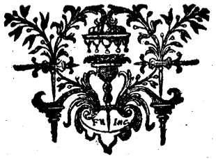

Inauguralafhandling om afledning og tilbagestrømning ved åreåbning.
Efter ordre fra det hæderværdige medicinske fakultet, med henblik på at opnå den højeste ære inden
for medicin, under ledelse af Johann Andreas Segner, dr. phil. og med., læge, fysiker og
matematiker, medlem af de kongelige selskaber i London og Berlin, sin store velgører og lærer, som
han ærer og ærer.
Forsvaret fremsættes til offentlig diskussion den 11. oktober år 1749 af forfatteren Georg
Christian Oeder fra Ansbach.
I Göttingen, hos Abraham Vandenhoeck, akademisk bogtrykker.

§. 1.
For den, der betragter emnet for denne afhandling, hvorved jeg ville fortjene det hæderværdige fakultets mest ærefulde vidnesbyrd og de højeste æresbevisninger i medicin, fremstår spørgsmålet om afledning og tilbagestrømning gennem åreåbning som et emne, der til enhver tid har været berømt og i de senere tider genstand for mange disputationer blandt store læger.Medicin er ikke blevet udrustet med nogen mere kraftfuld hjælpemiddel imod talrige sygdomme end blodudtømning. Derfor findes der heller ikke mere ædle spørgsmål end dem, der omhandler blodudtømning, og ingen, som har større betydning for den, der studerer medicin — særligt med det mål for øje, som hele kunsten er bestemt til: menneskets helbredelse.
Det tillades heller ikke den, som selv vil anvende sin hånd til helbredelse, at unddrage sig besværet ved arbejdet eller af frygt for, at han ved at tage parti i en af de stridende lejre, pådrager sig den andens fjendskab, undlader at undersøge de modsatte opfattelser. Tværtimod bør han ledes af en sikker fornuft og af råd, som er indbyrdes sammenhængende.
§. 2.
Man betragter — B. L. — de steder, som er udtaget fra den hæderværdige I. B. Sylvaes værk Traité de l'Usage des différentes sortes de saignées, principalement de celle du pied (Afhandling om brugen af de forskellige former for åreladning, især den fra foden). Og fra den hæderværdige Sénac: Essais de Physique sur l’Anatomie d’Heister.I forordet til Cl. Sylva, afsnit X og XI, lyder ordene således:
"Vigtigheden af dette spørgsmål, mangfoldigheden af de meninger, der deler lægerne, og min iver efter fuldkommenhed i mit fag, har fået mig til ikke at forsømme noget af det, der kunne hjælpe mig til nøjagtigt at forstå de regler, man bør følge ved valget af forskellige former for åreladning, for at forsøge at undgå den usikkerhed og de skiftende holdninger, som de fleste læger alt for ofte falder i, netop på et så væsentligt punkt i den praktiske medicin.
Jeg har i denne undersøgelse fulgt de principper, som kendskabet til blodets kredsløb og til fordelingen af blodkarrene samt lovene for hydrostatik har kunnet give mig. (Om disse emner har jeg rådført mig med hr. Winslow og dygtige matematikere).
Det er på disse principper, jeg har fastlagt den revulsion og derivation, som hver form for åreladning skal fremkalde, og på hvilke legemsdele de bør udøves."
Sylvaes passage fra bind II, s. 23–24:
"Det var vort århundrede, der var forbeholdt den ære at forklare nytten af den revulsive åreladning. Denne fordel skylder vi kendskabet til blodets cirkulation – en vigtig opdagelse, som har gjort det muligt for os at erkende og forkaste Galens fejl,som anbefalede åreladning ved foden i tilfælde af betændelser i nyrerne, blæren, livmoderen osv.
Ved hjælp af denne indsigt kan vi i dag let forene fornuften med erfaringen, og den gamle medicins visdom med den nye medicins oplysning.
Hvad mangler der da for at retfærdiggøre brugen af åreladning ved foden i de tilfælde, hvor vi anbefaler den?Den er klart grundlagt på de gamle lægers observationer; den er solidt bevist ud fra hydrostatiske principper."
Lad os høre den berømte Senac, s. 514:
"Med alle disse udsagn har man ønsket at forklare, hvad man i medicinsk praksis kalder revulsion og derivation. Disse er blevet til hellige grundsætninger, som man i dag ikke har lov til at afvige fra; følger man dem ikke strengt, risikerer man sit ry, bliver anklaget for at ignorere de love, som blodet følger i sin bevægelse; man udsættes for bebrejdelser fra læger, patienter og offentligheden. Disse urørlige love er af visse læger blevet modtaget med samme respekt, som man skylder de love, der mest angår menneskelivets ve og vel. Men eftersom man ikke skylder fordommen nogen respekt, vover jeg at rejse mig imod de grundsætninger, som er blevet fremført om valget af åreladninger; det latterlige følges her med fordommen i alle de finurlige raffinementer af denne doktrin. Den håner store læger, som har bragt deres fædreland ære ved deres dybe kundskaber og deres hæderlighed. For hvis denne doktrin er sand, har disse berømte læger i løbet af deres lange erfaring ikke været i stand til at skelne, om åreladning ved foden var skadelig ved betændelser i underlivet, og om den var uundværlig i ondartede febre. Alle disse store mænd har uvidende overset de skader og fordele, som visse læger hævder at have bemærket generelt ved åreladninger i foden og armen. For at genoprette den hånede medicins ære vil jeg offentliggøre mine egne tanker om valget af åreladning. De, der har forsvaret de meninger, jeg har bekæmpet, har betragtet sig selv som de egentlige bærere af den viden, som udgør vores kunst. Denne indbildskhed har overbevist dem om, at ved at angribe deres ideer, har jeg angrebet hele medicinen."
Side 532:
"Her er idéer, der fuldstændig omstyrter doktrinen om revulsion og derivation, som er den regel, der afgør åreladninger i foden og armen. Denne doktrin havde allerede forekommet store fysikere at være latterlig. En berømt akademiker har ofte sagt til mig, at han aldrig har kunnet begribe lægernes ræsonnementer om derivation og revulsion, og at alle hydraulikkens love samstemmende taler imod den. Den anerkendelse, han gav mine tanker om åreladning, inspirerer mig til endnu større dristighed: han sagde for at styrke mig i min overbevisning, at han var henrykt over, at en læge fra Akademiet havde omstyrtet grundlaget for en doktrin, der bragte fysikken i miskredit."
(1) Bog 13, Methodus Medendi, kapitel 11, samt Om behandlingsmetoden ved åreåbning, kapitel 18.
(2) Galen, hvis fejl netop blev fordømt, synes dog at modsige dette, såvel som dem, som Senac henviser til i noter 4, 7 og 8.
(3) Se note 2.
(4) Han nævner Duret, Fernel, Sydenham og Freind.
(†) Den kyndige læser bemærker, at Sylvae taler om Hydrostatik, mens Senac taler om Hydraulik. Hvem har mere ret?
§. 3.
Den retfærdige læser vil uden tvivl undskylde, at jeg har ønsket at gengive disse mænds egne udførlige ord. Det er af største betydning for mig, at alle mine læsere selv kan se, overveje og undres over denne enorme uenighed. Der vil uden tvivl blandt mine læsere også være nogle, for hvem dette emne er helt ukendt; og mange vil mangle adgang til selve bøgerne. Jeg kunne næppe have håbet på, at jeg ville blive troet, hvis jeg kun havde gengivet min fortælling med egne ord og ved blot at henvise til sidetal – undtagen måske blandt dem, der selv havde læst det. Hensigten med mine citater er nemlig at føre læseren hen til min egen situation – og jeg troede ikke, man kunne dømme mig uretfærdigt, når man så mig stå i en så vanskelig stilling, mellem de største autoriteter på begge sider, og ikke kunne slippe uden at lade disse stå over for hinanden og – med al forudindtagethed sat til side – følge fornuften som min vejleder, om end måske med vaklende skridt. Men også gennem hele skriftet vil disse steder blive brugt ofte og gentagne gange fremhævet.§. 4.
Da jeg først selv læste disse mænds ord, tænkte jeg på det terentianske udsagn: “I har gjort det godt – men jeg er nu langt mere usikker end før.” Men da jeg så, at det ikke er tilladt i god tro at forblive i uvished i en sag af stor betydning – i det mindste som den ene part anser for betydningsfuld – besluttede jeg først at søge, hvor min vaklende sindstilstand kunne finde et fast holdepunkt. Dernæst ville jeg ved et offentligt skrift informere mine tilhængere og dommere over min skæbne om, hvilken vej jeg anser for at være den rette at følge – i det mindste så meget, at det står klart for dem, at jeg elsker sandheden og længes efter den. Jeg vil derfor først fremlægge de gamles opfattelser af åreladning som revulsiv og derivativ behandling, derefter forklare de nyere, især Bellinis og Sylvas synspunkter – idet den første af disse opbyggede en vis teori. Dernæst vil jeg fremstille min egen opfattelse, og til sidst tale om praktiske regler.§. 5.
Hippokrates’ relevante udtalelser i denne sammenhæng er omtrent følgende (5):“Åreladning bør foretages på følgende måde: man skal desuden bestræbe sig for at skære så langt væk som muligt fra de steder, hvor smerterne plejer at opstå, og hvor blod samler sig. På den måde vil der ikke ske en for pludselig ændring, og man vil flytte vanen, så blodet ikke længere samler sig det samme sted.”
(6) “Ved smerter i ryg og hofter bør åreladning ske fra knæhase og den ydre ankel.”(7) “Ved smerter i lænden og testiklerne bør åreladning ske fra knæhase og den indre ankel.”(8) “Ved halsbetændelse skal man tappe blod fra venerne i armene og samtidigt give afføringsmiddel nedadtil, for at fjerne det, der forårsager sygdommen.”(9) “Ved halsbetændelse, hvor tungen er i dårlig tilstand, bliver patienten hurtigt kvalt, hvis ikke der hurtigt ydes hjælp ved at skære i armvenerne og under tungen.”(10) “Ved paracynanche (halslidelse) skal en vene især skæres under brystet – og venerne under tungen bør åbnes. Desuden bør blod tappes fra albuerne, hvis patientens kræfter tillader det.”(11) “Ved lungebetændelse og brysthindebetændelse – hvis smerten strækker sig opad mod kravebenet eller brystet – skal blod tappes fra den indvendige armvene på den side, hvor smerten sidder.”(12) Ved beskrivelse af en febertilstand i hovedet (lipyria) siger han, at blod først skal tappes fra hovedet, hvor det end synes passende.(13) “Ved smerter i baghovedet hjælper det at åbne den lige vene i panden.”
Af hensyn til kortfattethed udelader jeg mange andre steder, som synes mindre relevante for min sag, såsom Aph. IV, 18, De locis in homine, kap. 16 flg., og hele bogen De humoribus. (14)
(5) I "Om årer" bog XIII og "Om menneskets natur" kap. XXII findes der en vis angiologi, som synes at være overført fra bogen "Om årerne" til bogen "Om menneskets natur", eftersom man læser nøjagtigt de samme ord i kap. XX, XXI, XXII i sidstnævnte, og i kap. XI, XII, XIII i førstnævnte. Sylva (II, 7) citerer bogen "Om knoglernes natur" i stedet for bogen "Om årerne", og bemærker ikke, at de to citater fra Hippokrates, han nævner, faktisk stammer fra samme passage, fundet to steder – hvilket er et sandsynligt tegn på, at han ikke selv har kigget i værket. Hvis han havde gjort det, burde han ikke have fortiet de nærliggende udsagn, som ikke støttede hans sag, jf. noterne 6 og 7.
(6) Se "Om menneskets natur" kap. XX og "Om årerne" kap. XII; jf. også "Om indre lidelser", kap. LVII.
(7) Samme steder.
(8) "Om kroppens dele", kap. XLII.
(9) "Om akutte sygdomme", kap. XXXIX.
(10) "Om sygdomme", bog II, kap. II.
(†) Se om denne blodudtømmelse Cl. Walbaums netop offentliggjorte afhandling "Om åreladning hos de gamle og de moderne", § 27.
(11) "Om akutte sygdomme", kap. 52; jf. "Om sygdomme", bog I, kap. 25 og eksemplet Anaxionis i "Epidemier" III, sektion 1.
(12) "Om sygdomme" II, kap. 16.
(13) Aforismer V, 68; gentages i "Epidemier" VI, sektion 2.
(14) Hvis jeg ser noget i en dunkel og forvirret bog, bliver man her undervist i, hvordan man skal være opmærksom på kriser, hvordan de skal reguleres, og hvilke passende steder der skal vælges til udtømning af væsker. Men på tidspunktet for afgørelser (judikationer) var der ikke længere plads for den åreladning, jeg her taler om.
§. 6.
Celsus (15), i det fortrinlige kapitel om blodudtømning gennem venerne, skriver følgende:“Blod bør tappes fra armen, hvis årsagen ligger i hele kroppen; men hvis det drejer sig om en bestemt legemsdel, da fra netop den del eller i det mindste den nærmeste, eftersom blod ikke kan tappes hvor som helst, men kun ved tindingerne, armene og nær anklerne.Jeg ved godt, at nogle hævder, at blodet skal tappes så langt væk som muligt fra det sted, hvor skaden er, fordi man derved afleder stoffets strøm. Men med denne metode tiltrækker man det netop til det sted, der i forvejen er belastet. Men også dette er forkert (16).For det nærmeste sted tømmes først; og fra de fjernere steder følger blodet kun i det omfang, det tappes; når denne udledning ophører, fordi der ikke længere er noget træk, kommer det slet ikke frem.”
(15) Cl. Sylva, bind II, kapitel 10, der forbereder sit svar til Celsus Hecquet, imod hvem han diskuterede spørgsmålet om venesektion i foden ved fx kopper og lignende tilfælde, erkender faktisk, at dette sted hos Celsus ikke er til hans fordel. Men han synes at betragte det som en passende lejlighed til at udøve sit had mod Celsus.Han citerer bind II, side 19, hvor han samler en lang række uretfærdige domme mod Celsus, herunder Salmasius’ udtalelse (Saumaise est allé plus loin encore; car il le qualifie de tout à fait ignorant en médecine, i Prolegomena homonym. hyl. Iatricae).Han bemærker, at Lindenius mente, at Celsus havde tænkt på det Hippokratiske sted i De Natura Humana og De Venis — og tilbyder derfor Hecquet valget mellem autoriteten af Celsus og Hippokrates.Det nævnes, at Celsus muligvis henviser til et værk med tvivlsom autoritet; og et sandsynligt argument for at forstærke denne tvivl er, at Celsus ikke nævner Hippokrates ved navn i dette tilfælde – hvilket er påfaldende, da han ellers ofte nævner ham med stor respekt, fx i bog VIII, kap. 4.
(16) Dette argument ligner det, som Cl. Quesnay bruger i sine observationer over åreladningens virkninger, proposition III:"Den mængde, som passerer mere igennem den arm (af en kanal, der deler sig i to), hvor der er afledning (dérivation), end i den, hvor der er omledning (révulsion), vil altid være lig med den mængde, der er blevet fjernet."
§. 7.
Aretaeus, en mand med skarpt vid, hvis passager læses med fornøjelse – især den (17), hvor han tilbageviser overtroen hos dem, der tøver med at vælge mellem venerne i armen til åreladning – denne overtro levede dog videre i mange århundreder efter Aretaeus.Jeg vil nu give et overblik over, hvordan Aretaeus brugte åreladning, og i hvilke sygdomme – sådan at det straks kan overskues.Fra albuen lod han blod i tilfælde af: apopleksi, hjernebetændelse (phrenitis), hovedpine, og svimmelhed (vertigo); angina, brysthindebetændelse (pleuritis), lungebetændelse (peripneumonia), leverbetændelse (hepatitis), tarmslyng (ileus), og nyrebetændelse.Fra anklen (malleolus) lod han blod i tilfælde af: livmoderforstyrrelser (uterus suffocation), satyriasis, og nyresten.(22) For blodudtømning fra andre steder, se note 18.(17) Om behandlingen af akutte sygdomme (Bog II, kapitel 2). Aretaeus viser her skarpsind og klogskab: selvom han vidste, at meningen var forkert, gav han alligevel efter, da det ikke var af stor betydning for ham:
„Men hvis, siger han, blodet føres til milten, så skal man åbne venen i venstre hånd, den som ligger mellem lillefingeren og ringfingeren, da nogle læger mener, at den går helt til milten.“
Denne hele passage om blodudtrækning, som findes ofte hos Aretaeus, er meget smuk, så jeg kan ikke lade være med også at citere dette:
„Man skal helt sikkert standse blodet, før patienten mister bevidstheden, og man må ikke tage for meget; for selv blodudstrømning gennem munden kan svække mennesket betydeligt. Men efter at have fjernet en smule blod, må man igen tage blod, både samme dag, dagen efter og to dage efter. Hvis patienten derimod er mager og blodfattig, må man ikke åbne en vene.“
Dette kapitel handler om at fjerne og afvise blod.Aretaeus var som en Botallo i sin tid.Se De Cur. Acut. II.1, II.5, II.7, II.11 og De Cur. Diut. II.13.
(18) Ved hovedpine og svimmelhed brugte Aretaeus også tredobbelte metoder for blodudtrækning: Ved at åbne den lige pandevene (også anbefalet ved epilepsi; se note 13), Ved arterieåbning af tindingens eller ørets arterier, Og en anden slags arteriotomi gennem næsen (efterligning af næseblødning).
(19) Græsk citat: „Åbn venen under albuen, i hulningen (af armen), især når der er sidesmerter (pleuritis), for det er bedre at dræne blodet længere væk fra.“
(20) „Hvis venen ved anklen ikke flyder godt, så søg den ved albuen.“
(21) „Du skal åbne en vene både ved albuen og ved anklen, og tage meget og hyppigt blod.“
(22) Græsk citat: „Snit venen ved anklen, den som er tæt på nyrestenen.“
§. 8.
Blandt de mange steder hos Galenos, hvor begreberne revulsion og derivation næsten beskrives med de samme ord, vælger jeg følgende:(23) "På denne måde skal du, eftersom en fælles regel gælder, enten omlede eller aflede alle andre udstrømninger: (24) dem, der går gennem tarmen, skal du aflede gennem urinen eller livmoderen; dem, der går gennem urinen, gennem tarmen eller endetarmen; på samme måde dem, der løber gennem livmoderen, gennem tarmen eller urinen; og udflåd fra øjne, ører eller gane skal ledes gennem næsen.Revulsion udføres altid nedad for de øvre dele og opad for de nedre; ligeledes fra højre til venstre og fra venstre til højre; og fra indre til ydre dele, og omvendt."
(25) "Revulsion af sammenflydende væsker blev af Hippokrates kaldt antispasis; men afledning fra en allerede besat del hedder derivation.Begge former for tømning sker gennem de almindelige vener.Eksempelvis:For at fjerne væsker fra livmoderen, skal man åbne en vene ved albuen (revulsion); men hvis man åbner vener i knæhasen eller ved anklen, er det derivation. Hvis højre side af livmoderen er ramt, skal blodet tages fra højre hånd og ben; hvis venstre side er ramt, da fra de modstående lemmer." (26)
(27) "Ikke kun fornuften, men også erfaringen viser, at forskellig tømning passer bedre til forskellige kropsdele:
Hvis betændelse starter i munden, skal den ledes til næsen;
en vene i armen åbnes – hvis den ikke ses, så den midterste;
hvis leveren, brystet, lungerne eller hjertet påvirkes, åbnes den indvendige vene;
ved halsbetændelse først vener i hænderne, derefter dem under tungen;
ved sygdom i baghovedet åbnes albuevenen eller pandenvenen;
ved nyre-, blære-, kønsdels- og livmoderproblemer åbnes vener i benene, især dem omkring knæhasen; ellers dem nær anklerne.”
(23) Method. med. V.3, Bind X, s.107. Sammenlign med Method. med. IV.6, Bind X, s.99. Kommentar til Aphorisme V.68.
(24) ᾿Ανλισπάσεις og παροχετέυσεις.
(25) M.M. til Glauc. II, 4; Bind X, s.374. Sammenlign Method. med. IV.6, XIII.11; Om behandling ved åreladning 19. Det er i øvrigt mærkeligt, at den lærde Sylva, som citerer disse steder, ikke har bemærket, at de alle taler imod ham, da de i begyndelsen ikke anbefaler revulsion frem for derivation, når sygdommen allerede er til stede.
(26) Τῶν καθ᾽ εὐθὺ κόλων. For det, som også kaldes „ίξιν“, er netop det, der menes med „καθ᾽ ἰσότητα“.Altså: Det, der er på samme side og sted, svarer til hinanden – se note 19 og 22.Det er forbløffende, hvilke diskussioner dette ord „καθ᾽ ἰξιν“ har skabt.Et andet sted siger Galenos (Om behandling ved åreladning 15):„At ‚καθ᾽ ἰξιν‘ betyder det samme som ‚καθ᾽ εὐθὺ‘ er alment anerkendt.“
(27) Dette afsnit fra Method. med. XIII.1, Bind X, s.304, som egentlig burde afskrække dem, der benægter virkningen af derivation og revulsion, vil jeg diskutere senere. I mellemtiden bemærker jeg – som B.L. nemt kan se – at selv om de første ord synes at støtte fortalerne for derivation og revulsion, vælter de faktisk alle deres argumenter.Se note 2 og sammenlign med Om behandling ved åreladning, kapitel 18: „Nyrerne, siger han, reagerer nogle gange på åreladning fra albuen – når der f.eks. lige har været en betændelse og blodoverskud.Men for den egentlige nyrebetændelse (nephritis) bør man åbne venen i knæhasen eller i det mindste dem ved anklen.Derimod hjælper åreladning fra benenes årer mere ved betændelser i livmoderen end ved nyresygdomme.“
§. 9.
At forklare hele de gamles teori om revulsion og derivation fuldstændigt — hvis man da overhovedet kan kalde det en teori, eftersom de ikke kendte til blodets kredsløb — er ikke blot et hårdt arbejde på dette sted, men ville i sandhed være en særdeles anstrengende opgave (28) hvis nogen ville samle alt, ligesom Renatus Moreau samlede alle lægers udtalelser om åreladning ved lungebetændelse op til sin tid, og nu ville gøre det samme om hele denne lære om revulsion og derivation op til vores tid.De gamle (29) forestillede sig (30), at blodkarrene løb gennem kroppen på omtrent samme måde, som vi i dag tror nervefibre — ja, hele nervebundter — forløber i en sammenhængende linje fra deres oprindelse til det sted, hvor de virker.
Og ligesom de animalske ånder siges at flyde fra rygmarven gennem en sådan fascikel, som, adskilt fra de andre, til sidst når ud til venstre hånds lillefinger, på lige strøm, på samme måde mente man, at Salvatella-venen førte blod fra milten ud til lillefingeren.
Når man er præget af sådanne idéer og følger aksiomet "modsætninger helbredes af modsætninger", er det let at drage alle de former for revulsion og derivation, som Galenos så smukt og systematisk har udført og vist i de steder, jeg henviste til i note 23.
Derfor følger også, at man skal åbne venen på samme side (καθ' ίξιν, Efter vane) som den syge del, for eksempel (31) ved leverbetændelse åbne den indvendige vene i højre albue.
Men mit formål er ikke at vise, hvad de gamles meninger var, men i hvilke sygdomme de anvendte åreladning.
(28)Allerede Galenos siger i De Cur. per V. S. kapitel 15:"Alt, hvad lægerne har sagt om dette skema, hvis jeg ville begynde at skrive det ned, ville det kræve en hel bog, særligt tilegnet dette emne."
Dog kan man håbe på en endnu større anerkendelse for den, som ville påtage sig dette arbejde, end den, der ikke manglede Moreau, eftersom den overordnede undersøgelse af blodtappingssteder er vigtigere og mere ærefuld end den særlige, om åreladning ved lungebetændelse.Moreau selv erklærer, at han allerede havde påtaget sig dette mål.
(29) Se dog om Aretaeus i § 7.
(30) Se Brissot’s Apologi, s. 48, 59, 82, 83, Paris-udgaven. Også Fernel’s Therapeutics, bog II, kapitel 5:
"For matematikere er modsætninger dem, der holder sig til samme linjes centrum — for læger er modsætninger dem, der i samme venes rette forløb, ad hvilken væskernes strøm løber, er så langt fra hinanden som muligt.Når en vene er åbnet, tømmes først den del nærmest såret; derefter drages blod fra de fjernere dele, idet dette sker ved hjælp af de lige fibre (som naturen har bestemt til at trække blod, mens de tværgående fibre driver det væk).På den måde trækkes hurtigere og mere blod fra de dele, som fibrene er rettet imod, end fra andre steder."
(31) Se Methodus Medendi bog XIII, kapitel C, bind X, s. 303.
§. 10.
Jeg forbigår dog forfatterne (32), der levede fra Galenos' tid indtil Harvey, idet jeg nøjes med kort at have berørt 1500-tallets stridigheder om åreladning ved lungebetændelse. (33) Araberne og barbarerne, som kaldes middelalderens latinske læger, fulgte – som enhver ser, der læser de steder, Moreau citerer – Galenos’ regel (34): nemlig, at der ved ophobning af væsker skal foretages revulsion, og ved belejring af en bestemt legemsdel derivation.Således herskede arabernes lære fra år 712 til år 1514, hvor blod næsten uden nogen modsigelse blev tappet enten fra den modsatte arm eller fra den saphene på samme side.
Endelig fremstod en, der gjorde modstand, nemlig Petrus Brissotus omkring 1514, som lærte, at araberne modsagde Galenos, eftersom blod ifølge Galenos burde tappes fra den angrebne sides arm. Til sidst overbeviste han sin samtid, som svor på Galenos' genopgravede ord, og sejrede mere ved Galenos' autoritet end ved styrken af sine egne argumenter.
Der blev ført skarpe stridigheder, med gensidige beskyldninger om utallige dødsfald, og Martin Akakia (35), Brissots discipel, forekommer mig at have været en særdeles fræk person.
Da lægerne over hele verden var splittet i lejre og partier, tænkte Nicolaus Monardus og Hieronymus Mercurialis på at indgå en forsoning (36) mellem grækere og arabere; og til sidst fremstod Leonardus Botallus (37), som sagde, at det vigtigste ikke var, hvorfra man tappede blodet, men hvor meget man tappede.
Det er en særdeles trættende affære at læse disse mænds stridigheder om revulsion og derivation (38), som kæmpede på andabaternes vis – blindt – eftersom de skrev før Harveys tid; dog er Brissots, Fernelis og, på den modsatte side, Julius Caesar Scaligers (39) geometriske demonstrationer meget underholdende.
(32) Caelius Aurelianus, ligesom Aretaeus (begge siges at have fulgt Archigenes), ønsker, at man foretager åreladning i albuen på den modsatte side.Oribasius, Aëtius, Alexander, Paulus og Actuarius tilslutter sig Galens regel, se note 25.
(33) Moreau, kapitel 27; Paris-udgave.
(34) Se note 25.
(35) Moreau, side 36.Det synes dog at have skadet araberne, at de tappede blod for sparsomt, så de blev mindre heldige i behandlingen, og derfor blev beskyldt for at være som Akakia, fordi de tappede på den modsatte side.
(36) Disse er godt nok Moraeus’ egne ord på side 56, men jeg mener snarere, at Galen selv bør forenes med sig selv: for arabernes metode støttede sig på Galens regel (se note 25), mens Brissotus og de andre i praksis tappede på den ramte side.For araberne taler Aretaeus, hvis autoritet efter min mening, hvis det skal komme til en autoritetskamp, let kan måle sig med Galens – samt Caelius Aurelianus'.
(37) En kongelig og fremragende læge, ikke uden grund kaldt sådan ifølge Moreau, side 59.
(38) Moraeus, side 79:"Hvis du spørger, hvorfra denne så berømte strid er opstået, vil du finde, at hele uenighedens grundlag ligger i den omstridte forståelse af revulsionen.Hidtil har der i lægernes råd næppe været to, som er nået frem til samme opfattelse om revulsion og derivation."Han fortæller om lignende klager fra Sanctorius og fremhæver sin hensigt, se note 28.
(39) Moreau, side 34; Brissots Apologia, side 82-83, hvor det i margen lyder:"En elegant, men stædig geometrisk demonstration."
§. 11.
Den strålende fakkel, som Harvey tændte for hele medicinen, burde også have ladet sine klare stråler trænge ind i dette dunkle hjørne af medicinsk lære om revulsion og derivation,skønt en alt for stor ærbødighed over for oldtiden – som, ligesom foragt for den, må have sine grænser og rette mål – forhindrede, at tågerne helt forsvandt.Derfor var ét af de argumenter, som folk, der ikke kunne tåle den nye oplysning, rettede mod Harvey (for hvad andet kunne de fremføre end de gamles autoritet?), også dette (40):"Hos Harvey bortfalder hele grunden til revulsion og derivation; karrenes lige forløb og fællesskab bortfalder, for blodet ved åreladning trækkes ikke bort fra den syge del, men snarere fra hjertet, hvorfra det strømmer ud i arterierne (41)."
Forsvaret for den nye sandhed svarede på denne måde: at hvis ikke de havde været tyngede af autoriteters vælde, som reformatorer ofte er, ville de ikke have tålt navnene "revulsion" og "derivation" længere,og at næste skridt næsten var taget allerede, hvis det havde været muligt mere frit at følge den sandhed, der førte til nye erkendelser, trods mængdens råben.Derfor er den eneste frugt, der blev høstet fra denne særdeles frugtbare jord, hvad angår åreladning, denne:at det, som Aretaeus allerede så (42) og anatomiens genoprettere før Harvey allerede havde udtrykt (43),nu endelig åbent måtte indses: nemlig at overtroen i valget af vener på arm eller fod (44) burde latterliggøres.
(40) Disse ord stammer fra Jacques Primerose i Exercitationes et animadversiones mod Harveys bog om blodets bevægelse (De motu cordis, London 1630, s. 87), et skrift han stolt kaldte et “fjorten dages foster” i sin kritik af Regius og Walaeus.Han praler også med, at han – hvis han ville – kunne forsvare Harveys mening på en måde.Du kan også høre den klagende V.F. Plempius, som dog senere måtte tage ordene i sig igen (palinodia), i sit stort anlagte værk De subtilitate, bind II, s. 516. Se hans indvending nr. 44:
"Hvordan kan blod tappet fra cephalica-venen i armen hjælpe ved øjenbetændelse, når øjets blink og åndernes strøm løber dertil i hast?"
Og nr. 45:"I lungebetændelse – hvis blodet konstant strømmer gennem den syge del – hvordan hjælper åreladning så? Hvordan hæmmes udviklingen? Hvordan skal fordøjelse, modning og opløsning finde sted? Gode Gud!"
Og nr. 46:"Ved halsbetændelse: hvordan hjælper blodudtrækning fra cephalica-venen i armen?"
Og nr. 48:"Og hvordan, hvis det handler om at forhindre betændelse, trække væsker bort, dæmpe og berolige smerter – kan blodudtrækning, som Galenos betragtede som en øjeblikkelig kur, sammen med gnidninger og forbindinger, være nytteløs?Alt synes forgæves, lægekunsten bedragerisk, og alligevel virker det hele – som obduktioner og århundreders erfaring viser – for naturen handler ud fra sig selv, og lægen, dens vejleder, får derfor modsigelse fra selve kredsløbet."
(41) Se, hvordan den store Harvey svarer sine modstandere i Exerc. III, sikkert med Plempius’ 56 indvendinger i tankerne:
"De, der modsætter sig blodcirkulationen, gør det, fordi de ikke kan løse medicinske problemer med kredsløbet bestående;eller fordi de anser det for uværdigt at opgive tidligere anerkendte meninger; og mener, det er helligbrøde at betvivle den gamle tradition og autoritet.Til alle disse siger jeg: naturen og sandheden tager ikke hensyn til alder.De indvender dog medicinske observationer, som de mener ikke kan forklares.Men selv med cirkulationen i gang udføres åreladning, selv om blodet drives til den syge del.Men om alle disse ting, og mange flere, bør man ikke diskutere konsekvenserne, før blodcirkulationen er anerkendt som sandhed."
Se også i Exerc. II, hvordan Harvey irettesætter Riolanus for at vakle mellem autoritetstro og den nye sandhed.
Hvad angår Primerose, se hvordan Roger Drake svarer ham i Vindiciae contra Primerosium, i Doctores virorum disceptationes de circulatione sanguinis, Leiden 1656, s. 235,og Highmore i Disquisitio anatomica corporis humani, s. 149–150.De vender næsten tilbage til en slags universel revulsion, som de kalder et resultat af evakuation.Highmore siger: "Med cirkulationen bestående og med revulsionsprincippet i behold, kan blod stadig tappes fra kilden – og dermed fra den lidende del."
(42) Se § 7.
(43) Vesalius, De corporis humani fabrica, bog VIII, kap. 8; Fallopius, s. 504.(†) Medmindre medicinske årsager tilsiger andet.
(44) Overalt ser man spørgsmålet rejst: hvordan kunne så store opdagelser ikke have givet større nytte i lægekunsten?F.eks. rejst af Ramazzini i beskrivelsen af året 1691 (se nedenfor).Se også Primeroses påtrængende forord til sine Animadversiones contra Walaeum:"Harvey, siger han, havde udtænkt noget genialt og prisværdigt om blodets kredsløb – men for den lægekunst, han bekendte sig til, var det aldeles ubrugeligt."Man kan også høre, om man vil, i dødsriget Erasistratos prale af at have helbredt Seleukos’ stedmor (et tegn dog mere på politisk end medicinsk kløgt)og Harvey i Fontenelle’s dialoger.
§. 12.
Jeg finder ofte klager fra forfattere over dem, der med valg af kar i samme område fortsatte med at skære alle de dele, hvis kar skulle afskæres, og selv valgte kar. Jeg finder få, der har vovet at skrive om dette i offentlige skrifter, og indtil vores tid er det kun disse: (45) Bernhard Ramazzini, (46) Johann Bohnius, Ill. G. E. (47) Hamberger, Ill. (48) Senac, Clmos I. C. Kuchler, (49) og Christian Ferdinand Zweigel; og selvom der måske er flere, som jeg ikke kender, er der dog ingen grund til at nævne dem i forhold til det enorme antal af andre forfattere, blandt hvilke der er så mange berømte navne, som utvivlsomt ville fjerne enhver tvivl, hvis vi skulle diskutere ikke så meget vægten af argumenterne, men snarere antallet af støtter og autoriteter. Alle disse forfattere er enige om, at det vigtigste for helbredelse ligger i valget af den del, hvor blodet skal tages fra.(45) De, der kritiserer revulsion og derivation og fuldstændigt afviser al blodudtømning, såsom Helmont, F. S. Bontekoe og andre, tæller ikke med. Bernhard Ramazzini selv, som det ser ud til, var for hæmofob, afviser revulsion og derivation i Constituția Epidemica fra 1691, skrevet til G. G. Leibniz og indsat i Eph. Germ. December 11. A. X., samt i Opera Sydenhami, Genova 1726:
"Revulsion via venerne har nu besluttet sig – nogle sind er dybt præget af denne opfattelse om revulsionens kraft gennem venerne, men i virkeligheden vil den kun bidrage til at fjerne fuldstændigheden af blodet. Det er tilgivelsesværdigt noget af Aem. Parisano og Primirofio, der ikke af andre grunde, som L. di Capua siger, men fordi de så, at revulsionen gennem venerne i hele århundreder havde været et så velkendt redskab, at det næsten er helt faldet."
(46) I disputationen om blodudtømning.
(47) I disputationen, holdt som svar på Dionysius Kraegelios arbejde, fra 1729, genudgivet i 1747, om åresektion i forhold til ændringer i blodets bevægelse.
(48) I Essais de Physique sur l'Anatomie d'Heister. Paris, 1735, s. 511-532. Her skabte den ædle mand først tvivl, derefter opmuntrede han mig til at undersøge sagen og ledte mig til mine egne konklusioner ved kraften af argumenterne; jeg erkender min store taknemmelighed for hans hjælp.
(49) I Dissertatio de usu V. S. in pede fallaci, Leipzig, 1742, med denne præsentation, og svarende på dette.
§. 13.
Men alle bekræfter med én mund, at Laurentii Bellini, selvom han ikke er særlig favorabel, (50) også med større selvsikkerhed og sikkerhed, at han, som en mand, der ikke siger noget, (51) medmindre han demonstrerer det, havde bragt doktrinen om revulsion og derivation til en forståelse af de geometriske sandheder. Jeg har gennemgået mange volumer og ledt efter information om dette emne, og jeg har bemærket, at det er blevet undersøgt af få personer, der har arbejdet målrettet med det. Diskussionen om dette emne har især fundet sted i de senere år i Frankrig, blandt de ædle og berømte mænd: 1. B. Sylva, i sin bog Traité de l'usage des différentes sortes des saignées principalement de celle du Pied, to bind, 1727, af Fr. Quesnay, (52) som udgav observationer om blodudtømningens virkninger, med kritiske bemærkninger om Sylvas traktat, 1730; D. Chevalier, (53) som skrev Réflexions critiques sur le traité des différentes sortes des saignées, og andre, 1730; D. Martin, (54) som udgav et traktat om phlebotomi og arteriotomi, og andre, 1741; Hecqueto, (55) som skrev observationer om blodudtømning fra foden; Meurisseos a Morisson; (56) endelig R. Buttler, som skrev An Essay concerning Blood-letting. London, 1734. (57)(50) Bellini, om blodudtømning, i hans praktiske skrifter udgivet af Bohnio. 3. udgave, 1718.
(51) Senac, p. 511: "Bellini forsøgte først at give en 'teori, som afgør blodets forløb under blodudtømning – han blev drevet af de fordomme, der herskede blandt læger, han misbrugte selv geometrien og fysikken for at støtte sine fejl: men selv når han vildledte, gik han altid frem som en stor mand." Misbrug af demonstrationsnavn er meget almindeligt. Hvem, for guds skyld, vil tro på Bellini, hvad han selv erklærer i hans dissertatio de S. M. Prop. III? "Fra den eneste M. S. og på det tidspunkt, hvor det fejres, kan den samlede mængde, der efterlades i karene, let bevæges, fortyndes, opvarmes, gærer på mærkelige måder, sådan at alt, hvad der er sygeligt, og alt, hvad der er bemærkelsesværdigt og uventet, straks opstår i kroppen." Hvem vil ikke blive vred over disse ord, som gentages igennem hele disputationen, og som helt klart ikke har nogen mening? Hvem vil blive rørt over de argumenter, som der gives af den sindssyge tanke i V. S. Prop. IV?
(52) Han forlader alene derivationen og fastslår, at revulsion ikke adskiller sig fra udtømning, med et synspunkt mellem de nævnte, noter 45 og 49, og de andre. Han modsiger Sylva, i det han ikke synes helt at fordømme derivation. Desuden, som de andre, tager han fejl i, at han betragter den nedadgående og opadgående aorta som to helt forskellige kanaler og fastslår, at derivationen ikke kun sker i den arterie, som giver blod til den afskårne vene, men også i alle de øverste grene. For eksempel kunne en familiær kanal opdelt i to grene føre ham til sandheden, hvis han havde anvendt den ikke på aortaens grene i dens bøjningspunkter, men på den arterie, som giver blod til den afskårne vene og på arterierne, der stammer fra samme punkt som den.
(53) Hele hans argument er at benægte de tre påstande fra Sylva: 1) V. S. i armen er derivativ i forhold til hovedet; 2) V. S. i foden er ikke derivativ i forhold til lungerne; 3) V. S. i foden revulserer fra de øvre dele, mens V. S. i armen revulserer fra de nedre. Dette er en almindelig fejl, som de alle gør vedrørende den opadgående og nedadgående aorta og derivationen, ikke kun i arterien, der giver blod til den afskårne vene, men også i alle de øverste grene, som går hele vejen til hjertet. Se dette hele igennem bogen og i den faktiske forklaring af tabellen fra Verheyeno, p. 473, 348, 77, etc. Når det hele er taget i betragtning, kan vi se, at forfatteren ikke har forklaret sine egne holdninger klart, med mindre det gøres relativt uklar, p. 348 ff., og jeg har bemærket, at der i hans bøger er mange hyppige modsigelser.
(54) Han påpeger flere ting mod Sylva, Quesnay og Senac. Mod Sylva påpeger han stærkt og som det siges med ædelhed, at det er forgæves at være enig, når han nægter, at sektionen i armen og jugularen er derivativ i forhold til hovedet, da han frygter, at det ville modvirke det. Han indrømmer dog, at S. M. i armen revulserer lateralt fra hovedet, mens han anerkender, at sektionen i jugularen er derivativ i forhold til hovedet, men han hævder, at det vil være en moderat derivation, som vil være nyttig, hvis jugularsektionen udføres efter flere revulsionssektioner, p. 258. Men dette er i modstrid med det, han skriver på side 105, hvor han mod diskuterer Quesnay angående de skadelige virkninger af derivationen. Han hævder, at en moderat derivation ikke vil være så skadelig, men aldrig vil være så nyttig som Freindius påstår, i hans sektion af jugularen, som har stor autoritet hos Martin, som endda ønsker, at Freindius skal anvendes i starten. Han påpeger også modsætninger mellem side 21 og 123; på side 21 forsvarer han lateral derivation i grenene over arterien, som giver blod, på grund af den reducerede modstand i denne arterie, mens det på side 123 fastslås, at der også er derivation i de laterale grene, som følge af den tilstoppede vene, dvs. den oprindelige modstand er genoprettet.
Han er den første til at nævne på side 100 ff. retrograd effekt (contrecoup) efter en tilstoppet vene; men hverken han eller de andre overvejede, at selv om man skulle tro på de store virkninger af revulsion og derivation, så kunne de blive ophævet af denne retrograd effekt.
(55) De tilføjelser, som Sylva gjorde i sin anden bog.
(56) Jeg ser disse to mænd nævnt i Ill. Platneri Chirurg. inst. §. 12, 82, note sammen med de andre. Jeg har endnu ikke set disse bøger.
(57) Han erklærer selv, at han har alt, hvad Sylva har.
§. 14.
Jeg har sagt, at almindeligvis henviser alle til Bellinus, men dog ikke giver meget støtte til hans opfattelse. Se Bellinis Teori:Proposition I, 1:
"Uanset hvilken vene blodet udsendes fra, vil mængden af blod, som ved hver hjertesammentrækning strømmer ind i hovedarterien, hvis en af dens grene er forbundet med venen, som blodet udsendes fra, have en større proportion i forhold til mængden af blod, der samtidig strømmer ind i en anden arterie, end de mængder blod, der på samme tid strømmer i de samme arterier, når der ikke sendes noget blod, men det hele strømmer gennem sine kanaler."
Dette bevis er som følger: Blodet, der strømmer gennem arterierne, arbejder på at overføre blodet, der strømmer gennem venerne, og blodet i venerne modvirker blodet, der strømmer gennem de samme vener; ved at fjerne denne modstand - som opstår i hver veneudløb, vil modstanden ikke kun blive mindre for blodet, der strømmer gennem de arterier, som venen er forbundet med, men også for de større grene af de samme arterier, og til sidst for hovedtrunkerne helt til hjertet."
"Mængden af blod, der strømmer ind i arterien af den del, hvorfra blodet udsendes fra venen, vil være i større proportion i forhold til mængden af blod, der strømmer ind i arterien på den modsatte del, der stammer fra samme kilde, end mængderne, der strømmer ind, når der ikke sendes noget blod."
Eksempel: Når blodet sendes fra den saphene vene i højre ben, vil mængden, der strømmer ind i den højre iliaca, være større end den, der strømmer ind i den venstre.
"I forholdet mellem mængderne af blod, der strømmer fra den ene hovedarterie til sine grene, ændres intet ved V. S."
Eksempel: Fra den syge saphena strømmer mindre blod i begge axillære arterier end før V. S., men det fordeles ligeligt, som før.
"Blodets hastighed i alle vener, der strækker sig fra udløbet til hjertets forkammer, og arterierne, vil være større, medmindre det er muligt, at blodet, der befinder sig i hele venesystemet, der strækker sig fra den højre forkammer af hjertet til udløbet og successivt i de vener, der munder i dette område, samt videre blod i arterierne, fra hvilke venerne modtager, vil have en lavere hastighed, end når der ikke udsendes noget blod."
Hovedvenen, der fører til hjertet, vil være tættere på det andet og kan bevæge sig med sit eget blod i den anden retning, men hovedvenen, som sender blod ud fra en vene, vil føre mindre blod til forkammeret end den anden. På denne måde kan noget blod falde fra den ene hovedvene, som ikke udsender blod, og dens hastighed i den anden stigning vil stige.
"Den øgede hastighed, der udøves gennem den vene, fra hvilken blodet udsendes, og alle de kanaler, der konvergerer i disse, har, som gennem arterien, en større proportion af hastigheden i de samme kanaler før V. S., end den hastighed, der opnås gennem de øvrige homologe kanaler, i forhold til hastigheden gennem de samme, når intet blod sendes."
"Kort efter blodmangel ophører denne uensartethed i hastighederne, og kun den øgede hastighed forbliver, som dog er større end hastigheden før V. S., men i alle karene med de samme forhold, som var der før V. S."
"Det er nødvendigt, at den mængde blod, der sendes, ikke mindsker virkningen af hjertets sammentrækninger, musklerne og membranerne, som danner væggene."
Proposition VI, p. 106: "Navnene på revulfion og derivation er ikke så tomme, som nogle kunne antage; det er klart fra disse propositioner, at blod kan ledes fra en vene til en del af kroppen i større mængder inden for et givet tidsrum, end hvis det blev sendt fra en anden. Desuden, når en bestemt del er påvirket, er det sikrest at sende blod fra den stamme, hvis grene ikke leder mod den påvirkede del; dernæst fra venerne på den modsatte side, som stammer fra den samme stamme, og til sidst fra selve den påvirkede del; og dette sker ikke af nogen anden grund end fordi, hvis blodet straks blev sendt fra den påvirkede del, ville risikoen være, at sygdommen forværredes ved blot et for stort tilløb af stof til den påvirkede del. Dette er den dårlige virkning, der tilskrives derivationen, hvis den administreres for tidligt; eftersom det ved M. S. fra den anden stamme sker, at en større mængde blod sendes til det berørte område, end til den anden, hvis grene forsyner den betændte del, og på den måde vil en mindre mængde blod tilføres dette område, og dette er den virkning, der tilskrives revulfion. Først revulfion, dernæst derivation skal administreres."
(58) "Jeg har allerede påpeget denne fejlagtige opdeling af aorta, og vil fortsat gøre det. Dog er der noget sandt i denne proposition, forudsat at argumentationen ikke er omvendt, for da mere blod strømmer til stammen, siges det også, at i alle dens grene, fra hjertet til arterierne, hvor den afskårne vene har blod, vil der strømme mere blod end før M. S. Dette er fundamentet for den Sylvianiske og den almindelige teori, som Bellini ikke nævner, og som jeg ikke anser for at være sand. Jeg sagde, der er noget sandt i denne Bellinianske proposition: det er ikke meget; for jeg vil påvise, at den revulsion, der kommer fra den afskårne vene i foden, er uendeligt lille i arterierne i hovedet og de øvre ekstremiteter."
(59) "Dette argument bruges af alle til at demonstrere revulsion."
(60) "Ikke alene er der en større proportion af blodmængden, der strømmer ind i arterien fra hvilken den afskårne vene har blod, end der var før S. M., men også en absolut mindre mængde vil strømme til arterien fra den samme punkt, hvor den stammer, mens V. S. pågår, end før den; dette vil jeg vise senere, hvis det, som alle hævder, er sandt, at derivation sker gennem V. S. i arterien, der giver blod til den afskårne vene, hvilket jeg ikke tror."
(61) "Dette er Bellinis private kommentar, helt sikkert forkert! For hverken de kontinuerlige kanaler er de nederste og øverste hulvener, og denne gensidige modstand tillader ikke Eustachians ventil."
(62) "Når denne ulighed i hastigheder ophører, og de oprindelige forhold vender tilbage, er det kun ret, at alle effekterne af denne ulighed ikke blot ophører, men også helt destrueres; der er hverken noget at håbe på eller frygte fra revulsion og derivation. For hvis den afskårne vene accelererer blodet i arterien, som leverer blod til den afskårne vene, forsinkes den lukkede vene. Effekterne af denne acceleration og forsinkelse ophæver hinanden og forsvinder, bortset fra effekten af udledning."
(63) "Men hvorfor ikke straks fra disse vener på den modsatte side fra den samme stamme, hvis formålet er revulsion? For denne revulsion er langt større end den, der sker i den helt modsatte stamme."
(64) "Der vil snart være et passende sted at tale om dette."
§. 15.
Cl. Sylvae Systema:"Enhver V. S. er samtidig evakuatorisk, afledende og revulsiv.Årsagen til afledningen er den uændrede modstand, der har modsat sig blodstrømmen i den afskårne vene.Afledningen begynder i det første øjeblik af M. S., vokser, mens den varer, mindskes kort efter afslutningen, og til sidst ophører den.Afledningen er større i den arterie, der svarer til den afskårne vene, end i nogen anden.I de grene, der går fra stammen, fra stedet hvor V. S. finder sted, helt frem til hjertet, er afledningen forskellig afhængig af afstanden fra hjertet; jo tættere stedet er på hjertet, desto mindre er afledningen der."Her (Rhodus) er springet.Derfor skal de relevante forklaringer præsenteres, som vedrører dette emne."Obstruktionen, siger han, i V. S. i foden ophører, fordi den arterielle kanal fra hjertet til det sted, hvor S. sættes ind, overfører blodet i rigelige mængder; en del af dette blod, som hurtigt strømmer ind i stammen, går ind i de lateralt afgående arterier: her udvider et kraftigere blodtryk klappen og skaber en vej for det menstruationsblod, som naturen har bestemt.En vanskelighed (der modsiger forklaringen på effekten af V. S.) opstår, men den kan let fjernes. Denne vanskelighed er: Det ser ud til, at det blod, som trækkes ind i den arterielle kanal, som går lige fra hjertet til foden, bør sive ud fuldstændigt gennem åbningen af den prikkede vene og strømme ud lige så hurtigt som det er kommet ind; og således, uanset hvor virkelig afledningen er i den direkte kanal, bør de laterale uterine arterier, som afgår fra den, ikke kunne påvirkes.”
Det er ikke sikkert, at mængden af blod, der udsendes gennem V. S., er lige stor med mængden i den afledte stamme. Det er bestemt ikke sandt uden afledning; for når afledningens kraft er på sit maksimale, synes det ikke at være tilstrækkeligt med et hul i venen, som udsender alt blodet, der er blevet opsamlet i den nedre aortastamme, og at det derfor er nødvendigt at dirigere en del af det blod i de laterale arterier.
Selv hvis alt dette accepteres, er det tilstrækkeligt, at blodets hastighed i den kanal, der går direkte fra hjertet til stedet for V. S., øges. Denne hastighed kan dog ikke øges i stammen uden samtidig at øge den i grenene.
Endelig er det i det mindste sikkert, at afledningen sker i de laterale grene ved afslutningen af V. S., når venen er lukket. Blodet, som hurtigt strømmer ned, bliver omdirigeret til siderne, og med én kraftig bevægelse udvider det grenene, hvilket medfører en pludselig fyldning og udvidelse af de uterine arteriers ydre dele. Dette svarer til effekten, der ses i foden under V. S., hvor menstruationsblodets strømning genoprettes.
Når der afledes mere blod gennem V. S. til den arterielle kanal, der svarer til den afskårne vene, skal en tilsvarende mængde blod afledes fra de øvrige arterier. Revulsionen er til stede i alle kroppens dele, bortset fra stedet for V. S., men den varierer afhængigt af arteriernes placering og forbindelsen med den arterie, der svarer til den afskårne vene. Nær hjertet, hvor aorta deler sig i den opadgående og nedadgående stamme, er revulsionen lig med afledningen i den modsatte stamme. I arterierne, der går ud fra hver af de to stammer under aortas deling, er situationen anderledes. Når mere blod afledes via V. S. i disse grene, vil revulsionen være omvendt proportional med afledningens størrelse, og jo længere grenene er fra hjertet, jo mindre bliver revulsionen.
Den ene revulsion er konstant og absolut, den anden variabel. Jeg håber, at med tilladelse fra B. L., vil man ved første øjekast forstå, hvor bemærkelsesværdig denne kommentar er, selvom vi kan undlade at gennemgå de mange aspekter, der behandles mellem siderne 29–38 om denne revulsion, både den absolutte og den variable, og kort i stedet forklare, hvad der om brugen af de forskellige V. S. er sagt.
Derivationen har få gavnlige effekter, og frygten er en meget retfærdig årsag. En klog læge bør aldrig bruge derivation, hvor der er en obstruktion. Derivations eneste nytte er, at den fjerner menstruationsforstyrrelser.
Revulsionens største nytte er at fjerne obstruktionen, når den er til stede, især i starten af et problem. Det er dog tydeligt, at ære kun tilkommer den absolutte revulsion, ikke den variable, som altid er tvetydig og ofte skadelig.
V. S. bør udføres på armen ved inflammation af de nederste ekstremiteter eller abdomens organer, ved ægte pleuritis (i området fra femte til sidste ribben), ved livmoderblødning, ved kraftig hæmorrhoidalt blodtab, ved erysipelas eller andre inflammationer af den modsatte arm. Den bør ikke anvendes ved inflammation af mediastinum, perikardium, brystbenet på grund af den mediale arterie og den indre mammaria, i pleuritis af de øverste fire ribben, i inflammationer af nakken på grund af forgreninger af vertebralarterien, i obstruktioner eller inflammationer af hjernen, og i inflammation af den arm, hvor V. S. skæres.
V. S. på foden er nyttig til at genoprette menstruation, hvis der ikke er mistanke om livmoderinflammation, og er særligt effektiv til at forhindre hjerneoverbelastning. Det er skadeligt ved obstruktioner og inflammationer af de nederste ekstremiteter, alle abdominale organer, hæmorrhagier i disse områder (livmoder, hæmorroider osv.).
På grund af den variable revulsion kan det muligvis have nytte ved sygdomme i den modsatte fod, men denne nyttige effekt af variabel revulsion er allerede blevet forkastet.
Skæringen af jugularvenen, fordi den afleder blod til carotiderne, afleder til både de eksterne og interne kar, selv om den fra den nedre aorta og subclavisk blokerer. Derfor kunne dens nytte måske være begrænset til sygdomme i den nederste del af kroppen op til den fjerde ribben, men hvad angår hovedet, fortjener den ikke stor ros og kan være skadelig ved sygdomme i hjernen, da den forårsager en blodstrøm, der kan føre til forværring, især i begyndelsen.
(65) T. 1, s. 2, 13-16, 22, 25-28, 29, 46, 64, 113.
(66) Det er en argumentation, som Bellinus og alle andre bruger.
(67) For det er sandt, at ikke kun formindskes effekten, men også helt ødelægges ved tilstopning af den afskårne vene, som var årsagen til sektionen af venen. På samme måde som en mand, der muligvis har valgt en militær rute, vil måske have bevæget sig meget, men han har ikke fremmet noget.
(68) Selvfølgelig; der sker absolut ingen derivation i nogen anden arterie end den, der modtager blodet fra den afskårne vene.
(69) Jeg beder B. L. om at overveje dette, før han demonstrerer det modsatte: intet i blodets bevægelseskræfter fra hjertet og arterierne ændres, mens V. S. pågår; selvfølgelig ændres intet i de modstande, der modarbejder blodet i de influerende grene, undtagen i den ene arterie, som svarer til den afskårne vene: sådan bør vi argumentere, fordi gennem en lille modstand i arterien (for eksempel den højre lårarterie) strømmer mere blod, end der gjorde før, mens i den indre iliaca arterie er der ingen ændring, den kan ikke modtage mere blod end før (selvfølgelig kan noget fjernes, men det kan ignoreres i dette tilfælde); men den fælles højre iliaca arterie modtager så meget mere blod, som den modtager fra højre lårarterie, end venstre iliaca arterie gør; videre vil den nedre mesenteriske arterie modtage samme mængde blod som før, mens aorta-truncus vil tage meget mere blod end normalt, alt efter hvor meget den højre iliaca arterie tager, og så fortsætter det hele til hjertet, også selvom vi midlertidigt tillader den opdeling, der sker i den stigende og faldende aorta. Dette vil gøre, at den faldende aorta modtager mere blod end normalt, alt efter hvad den højre lårarterie optager.
(70) Jeg kan ikke sige, at hans skarpsindighed var stor, eftersom han fandt, at det var let at forstå; men jeg kan heller ikke undlade at sige, at han betragtede det som en let svarmulighed.
(71) Jeg foretrak at gengive Sylvas egne ord for ikke at blive anklaget for at have forvrænget betydningen, som mig synes at være tilstrækkeligt uklar, om ikke de ord, han brugte, var præcise nok.
(72) Sådan synes det mig at være, for ikke blot afledes der intet blod, men det trækkes også tilbage fra livmoderarterierne.
(73) For dette er bestemt sandt, hvis det er sikkert, at effekterne er lig med deres årsag. Desuden afledes mere blod end normalt i aortatruncus, fordi lårarterien optager mere.
(†) Jeg svarer med Celsi’s ord: Blodet følger kun, hvor det afledes: Når det er undertrykt, da det ikke trækkes, kommer det slet ikke.
(74) Hvis årsagen til den større hastighed i truncus er, at hjertets bagvedliggende kraft er større, ville hastigheden også øges i alle grene, men da årsagen til denne forøgelse kun findes i den gren eller truncus, der svarer til den afskårne vene, er det ikke nødvendigt at øge hastigheden i de øvre grene.
(75) Denne argumentation er virkelig bemærkelsesværdig, for den giver samme effekt til modstridende årsager. Hvis blodet fortsætter med hurtigt at falde, efter at venen er lukket, hvad vil være årsagen til den hurtige hastighed, hvis venen er åben? Det er sandt, at den lukkede vene reflekterer blodet i de nærmeste laterale arterier; men det er umuligt, at det modsatte skulle være sandt, og at afledning finder sted i en åben vene.
(76) Rigtigt: noget afledes fra alle arterier, der sker en revulfion, men der er ingen afledning, undtagen i den arterie, der svarer til den afskårne vene. Og revulfionen, som Sylva tror, er mindre, jo tættere på hjertet stedet er, men jo nærmere V.S.-stedet er, desto større vil revulfionen være.
(77) Her ser B. L. fejlen opstå fra den fejlagtige opdeling af aorta i to helt forskellige kanaler, og opdelingen af kroppen i to næsten regioner. Hvis Sylva og de andre havde tænkt på, at vinklen, de skaber, ikke har noget med spørgsmålet at gøre, og at de ikke kunne have forstået, at ved V.S. i foden ville revulfionen også finde sted i armhulerne og halspulsårerne, skulle de have forstået, at revulfionen også måtte finde sted først i den indre iliaca af samme side, derefter i den fælles iliaca af den modsatte side, og videre op til hjertet, med den mindste revulfion nær hjertet, og ingen afledning.
(78) Den variabelt ændrede revulfion er et bemærkelsesværdigt fænomen. Det er bemærkelsesværdigt, at den samme årsag får tildelt en dobbelt og modsat virkning. Overvej med mig, B. L., her og i den argumentation, der findes i not. 75, den tilbagevendende natur, og forsøg at fjerne de forudindtagede meninger. Hvis der er en kanal, hvor en bestemt mængde væske presses ind, og derfra går grene ud i forskellige retninger, og hvis det kan ske, at mere væske end normalt kan strømme ind i en af disse grene, så vil noget blive trukket tilbage fra de øverste grene; det vil sige, at der vil være revulfion i disse. Jeg har aldrig mødt nogen, der ikke ved første øjekast ville genkende dette, især i den ven, hvor jeg, uden at de kender mit mål, har foreslået dette spørgsmål: Hvad ville der ske i en sådan forgrenet kanal? Cl. Sylva kunne ikke forhindre denne tankegang, men den forudindtagede mening, om den anerkendte lære, hævder, at der vil finde sted derivation. Jeg har fundet navnet "variabel revulfion", som for mig er det rigtige ord: sideroxylon.
(79) På side 37 skriver han følgende: "Det ville være en uacceptabel uvidenhed, især i en tid, hvor mekanik og anatomi, ved deres fremskridt, har kastet et klart lys over, hvad der tidligere kun var spekulationer hos de gamle læger om valget af blodudtømmelse: eller det ville være den ydmygende spids af en blind fordom, der helt har underlagt fornuften, at forsømme de klare fordele ved den absolutte revulfion, som altid er pålidelig, altid effektiv, til at erstatte den variable revulfion, som er tvetydig, ofte ubrugelig, og næsten altid skadelig." Se B. L. § 2, især den akademiske mening om dette, not. 75, 78.
(80) Se B. L.’s overtro, som er lige som de gamle, om manglen på vener på samme sted, eller en afvigelse derfra.
(81) Om revulfionen, som er i den modsatte aksillære, som han angiver på side 44 med disse ord: "Derivationen, som blodudtømningen forårsager mod den side, hvor man udtømmer blodet, stjæler åbenlyst en del af blodet fra den nedre aorta og fra den modstående subclavia arterie, som uden denne omstændighed burde flyde der." Men at påstå denne revulfion er ikke tilladt i et konstant system, hvilket alle, der opstiller og anbefaler systemer, kræver. Hvis blodudtømningen i foden afleder blod fra hele den nedre aorta og dermed fra alle grene, også fra den modsatte iliaca, og hvis dette V.S. i foden trækker blod tilbage fra den øvre aorta, bør den samme logik gælde for denne øvre aorta, så den vækker derivation i hele trunken som i armens V.S., så den ikke trækker blod tilbage fra den modsatte subclavia, som V.S. i foden ikke gør med den modsatte iliaca. Hvorfor skulle man ikke skære i armen, når det gælder de vertebrale grene under nakkens inflammation: hvorfor ikke snarere i den ydre carotis, hvor derivation også bør finde sted, som i den vertebrale, og hvis dens små grene er?
(82) Se not. 78, 81.
(83) Side 111, 112, 113:Ce que nous avons dit jusqu’ici...Det, vi hidtil har sagt, bør ikke give et for højt indtryk af åreladningen i halsen: denne åreladning har aldrig nogen særlig nytte, hverken i kraft af evakuationen eller i kraft af den fuldstændige revulsion, som den fremkalder; og hvad angår den derivation, som den tiltrækker, så er den skadelig i hjernesygdomme, når den foretages i begyndelsen. Vores synspunkt på dette punkt er fuldt ud berettiget af erfaringen; og de uheldige følger af denne åreladning, når den foretages for tidligt, uden på forhånd at have reduceret blodvolumenet, har i alt for høj grad demonstreret faren ved at iværksætte den under disse omstændigheder.
Dog, på trods af denne vanskelighed, har flere gode iagttagere, som har formået at forene solid teori med god praksis, idet de har bemærket forskellige virkninger af denne åreladning på forskellige tidspunkter og i forskellige, men lignende sygdomstilfælde, og derudover har de ladet sig vejlede af en analogi (næseblod), hvis anvendelse ikke virker søgt: disse oplyste praktikere har erkendt, at åreladningen fra halsen, som er farlig, når den bruges uforsigtigt, det vil sige for tidligt, ophører med at være det og frembringer tværtimod meget gode virkninger i tilfælde af hjernens forstoppelser, når den anvendes på passende måde; det vil sige efter at blodkarrene allerede er blevet væsentligt tømt gennem flere tidligere åreladninger.
Jeg gentager, det er med rette, at man fra systemskabere kræver, at de ikke fraviger deres systemer, medmindre de erkender det. Derfor burde Sylva, som ivrigt – ja, endda hidsigt – forsvarer åreladningens derivatoriske funktion imod Bianchus, og indrømmer, at den er skadelig (for hvordan kunne han andet uden at modsige sit system?), have sagt i ét ord, at åreladning i halsvenen er unyttig med hensyn til hovedet. For det, han siger – at man kan udføre denne åreladning efter flere andre, når blodmængden allerede er blevet reduceret – det er som om han intet sagde: det er det samme som ingenting. At det, efter tilstrækkelig evakuering, ikke blot ikke skader, men endda gavner, er tilmed usandt. Hvis åreladning er skadelig, fordi den leder blod til et fremmed sted, så kan det være, at den skader mindre, når der er lidt blod tilbage, men den kan ikke ikke skade – og slet ikke gavne.
Så Sylva ville uden tvivl have været konsekvent, hvis han havde svaret til forsvarerne af halsåreladning, at den derfor ikke skadede, fordi man først havde udført flere andre åreladninger – men at det altid havde været bedre at lede blodet bort fra benet.
I øvrigt vil jeg tale særskilt om åreladning i halsvenen.
§. 16.
De fejl, jeg hidtil kun har nævnt spredt, vil jeg nu kort sammenfatte som de mest betydningsfulde fejl i alle teorier om revulsion og derivation. Den første er opdelingen af aorta i en opstigende og en nedstigende stamme og deraf opdelingen af hele kroppen i to regioner. Som eksempel kan tjene følgende ord af den lærde Martini (s. 3–4):“Når det handler om derivation eller revulsion, skal man være opmærksom på det sted, hvor den store aortastamme deler sig i en øvre og en nedre gren—her begynder derivation og revulsion.”Men anatomien støtter ikke denne opdeling. Se den ærværdige lærer Haller i Comment. Boerh. II, s. 345, der siger: “Galen var ophavsmanden til denne fejl, da han brugte dissektioner af dyr og derfor skabte ideen om en opstigende og nedstigende hovedstamme i den store arterie.” Selv hvis dette ikke var en anatomisk fejl, kunne man ikke tale anderledes om forholdet mellem disse stammer end om iliaca eller enhver anden forgrening: hvor der er forgrening, findes en stamme og en fra den afgående gren. Hverken vinklen mellem gren og stamme eller kanalernes diameter er relevant for spørgsmålet om revulsion og derivation.
Forestil dig to kanaler, som udspringer fra ét punkt uden en tredje imellem. Konstruér flere sådanne systemer, hvor én stam bliver til en gren af en anden. Det betyder intet, hvordan vinklerne eller kanalernes diameter er – det, der gælder i de laveste grene, gælder også i de øverste: Hvis hastigheden øges i den nederste kanal, mindskes den i den ledsagende gren, øges i stammen af disse grene, mindskes igen i dennes sideregn – og så videre.
Dette vil snart blive forklaret mere tydeligt. På samme måde afvises den anden fejl – nemlig troen på, at øget hastighed i den nederste kanal øger hastigheden i alle øvre grene op til det punkt, der kaldes revulsionens og derivationens begyndelse – hvilket ikke findes, da arterierne i de øvre dele af kroppen ligeledes er grene af aorta som cøliakien eller enhver anden. Ud fra denne fejlagtige antagelse ville man derfor også forvente en øget hastighed i de arterier, der forsyner de øvre kropsdele.
Endelig har man ikke taget højde for, at al håb eller frygt for revulsion og derivation ødelægges af den retrograde bevægelse (contrecoup) efter at venen er lukket. Hvis man antager, at tilstanden, der opstår efter åbningen af en vene, er varig, og at årsagen nu er øget modstand i den arterie, der forsyner den åbnede vene – så vil Sylva næppe tøve med at indrømme, at virkningerne vil være det modsatte af dem, der opstår ved en årsag med reduceret modstand.
Vil han tøve med at indrømme, at det samme sker, hvis sådanne reducerende og forstærkende årsager hurtigt afløser hinanden? Hvis en veneskade er en årsag, der mindsker modstanden, så er tilstopningen af såret en årsag, der øger den. Modstridende årsager har modstridende virkninger – og hvis de virker samtidig eller hurtigt efter hinanden, ophæver de hinanden, som det gælder for alle modsat rettede kræfter.
(84)Hvis jeg sagde til en fysiker: "Her er hovedstammen af en vandstråle, som deler sig i flere grene, hver presser vandet med en kraft på 10. Men vil du øge den kraft? Tag en af disse grene og lav en åbning (som et åreladning); straks vil vandet strømme gennem hver af disse rør med en kraft på 12."
Hvis jeg fortsatte i samme tone og sagde: "Læg mærke til, at disse grene ligger oven over hinanden; når du åbner en gren foroven, øger du vandets kraft i alle de andre grene, undtagen den første. Vandet, som nu stiger mere i de andre, ledes væk fra den første. Så har du en gren, der modtager mindre, mens de andre modtager mere" — da ville jeg kun opstille en elendig lære.
§. 17.
Efter at have afsluttet det anstrengende arbejde med at fortælle historien om læren om revulsion og derivation — og efter, som det forekommer mig, grundigt at have fremlagt mine egne begrundelser og synspunkter — går jeg nu over til selve spørgsmålet og til at udtrykke min egen opfattelse.Spørgsmålet er todelt: For det første, om blodets strømning i den arterie, hvorfra den åbnede vene får sit blod, bliver fremskyndet ved en veneåbning;
[85] og for det andet, hvis man antager, at dette sker, hvad ændres der så i blodets bevægelse i kroppens øvrige arterier?
Jeg vil først undersøge det andet spørgsmål og derefter det første.
(85) Senac, S. 522, 525 — Gewähren wir den Verfechtern der Revulsion und Derivation die Voraussetzungen, die sie verlangen; gerade auf dieser Beschleunigung gründen sich meine Einwände.
§. 18.
Lad kanalen være kegleformet, om man vil, konvergerende og udsendende grene i forskellige afstande: det er uden betydning, hvilke vinkler eller hvilke rørdimensioner kanalerne har, om de er lige eller buede, lange eller korte grene, eller om grenene igen deler sig i nye grene.Tegn en linje, kære læser, på en hvilken som helst måde, og tegn en anden linje, der skærer den, og derefter, i en vis afstand, endnu en linje, og så videre; således kan man fremstille den kanal, som jeg forestiller mig.Det sted, hvor en gren afgår, kaldes en "knude".Af kanalerne, som udspringer fra den sidste knude, skal den ene, fortsættelsen af stammen, kaldes A, og den anden, grenen der afgår fra stammen, kaldes B.Lad den del af stammen mellem den sidste og næstsidste knude kaldes kanal I, den mellem den næstsidste og tredje sidste knude kanal II, osv. De øvrige grene kaldes i rækkefølge C, D, osv., sådan at i den næstsidste knude mødes kanal I og gren C, i den tredje sidste knude kanal II og gren D, osv.Når nu en bestemt mængde væske konstant, uden ændring, strømmer ind i denne kanal med dens grene, drevet af en kraft, og jeg kalder denne mængde en "bølge", skal det forstås, at så længe intet ændres i grenene, vil en bestemt mængde, altså en bølge, ankomme ved hver knude og blive fordelt mellem de derfra udgående kanaler i en konstant proportion.
Hvis forholdet mellem mængderne, der strømmer ind i A og B, ændres, siger jeg, at følgende vil ske:
Forholdene vil ændre sig i alle knuder, efter at de er opstået, og vil derefter forblive konstante, så længe den nye tilstand varer.
Ændringen i forholdene vil dog ikke ske ensartet i alle knuder, men være størst i den næstsidste knude, mindre i den tredjesidste, og mindst i den øverste (sidste) knude.
Indtil ændringen i forholdene skridtvis har nået den øverste knude — hvor, ifølge forudsætningen, altid lige store bølger ankommer — vil bølgerne, der ankommer til de øvrige knuder og fordeles i de derfra udgående kanaler efter de nye forhold, ændres skridtvis.
Det vil aldrig kunne ske, så længe den ændrede tilstand varer, at de nye bølger vil være identiske med de bølger, som i tidligere tilstand ankom til de samme knuder. (†)
Lad os overveje denne dobbelte ændring af forholdet i A og B (86), enten ved at øge eller mindske modstanden i en af disse kanaler. Lad os antage, at ændringen sker i kanal A. Hvis en større mængde end normalt flyder ind i en kanal, sker der en afledning, hvis en mindre mængde, sker der en tilbageløb.
Lad os antage, at forholdet i alle noder (87) er det samme m : n = mængde i A : qB = q : kanal I : qC.
Lad os antage, at forholdet i den sidste node ændres til pm : n, og at enten p > 1 eller p < 1, det første svarer til mindsket modstand i A, det andet til øget modstand.
Lad enhver bølge, der når den sidste node med alle forhold uforandrede, være P, og lad Z betegne enhver bølge i en hvilken som helst node til enhver tid.
I en stabil tilstand før ændringen i A kan alle rør optage en mængde svarende til den driftkraft og modstand, som forefindes i hvert rør, så mængden, der kan flyde på en given tid, faktisk også flyder i samme tid i hvert rør.
Men selv hvis vi antager, at den samme bølge ikke nøjagtigt når enhver node, vil de mængder, der flyder i grenene, stadig have det samme forhold som de mængder, der kunne flyde på samme tid.
Derfor, når forholdet i den første node ændres fra m : n til pm : n, kan rør A, som før kunne optage m/m+n P, nu optage pm/m+n P, mens rør B, hvor intet er ændret, fortsætter med at optage n/m+n P.
Dermed kan kanal I optage det samlede beløb, som A og B tilsammen kan optage, nemlig pm+n / m+n P. Grenen C kan optage det samme som før, nemlig n/m+n. m+n/m p (hvor m+n/m p er bølgen, der flyder gennem den næstsidste node til enhver tid), fordi intet er ændret her.
Der opstår altså i stedet for forholdet m : n i den næstsidste node, det forhold, der svarer til mængderne i kanal I og C, nemlig pm+n P : m+n P * min mt n pmt n mtn. m : n bliver således q = pmt n. nt m.
Lad dette ændrede forhold i den næstsidste node kaldes qm : n, og hvis de øvrige ændrede forhold kaldes rm : n, sm : n etc., vil man på samme måde finde, at de er = qmtn smtn' etc.
Når før mutation strømmede en bølge Z ind i en hvilken som helst gren B, C, D, osv., så efter mutation vil den strømme i B Z, i C Z, i D Z, osv. pm & n qm't n rm & n. Hvis p er 1, vil også y, r, s, osv. være større end enhed, og hvis p er < 1, vil bølgerne i B, C, D, osv. være mindre end Z. Dette betyder, at modstanden i A mindskes, og der opstår en reversion i alle grene B, C, D, osv., mens øget modstand i A medfører en afledning i B, C, D, osv. q.e.d. første. Det er klart, at hvis p er større end 1, vil bølgekoefficienterne i B, C, D, osv. stige, og hvis p < 1, vil de samme koefficienter falde, hvilket betyder, at reversion og afledning er større i C end i B, større i D end i C. q.e.d. andet. Når forholdet i næstsidste node er ændret, sendes en anden bølge til den sidste node, og efter at forholdet i den næstsidste node er ændret, sendes en anden bølge til næstsidste node. Efter ændringen i den øverste node, fordi bølgen gennem denne node ikke ændres, sendes bølgen konstant videre til den næste node, til den næstsidste, til den sidste node. Når forholdet i alle noderne er det samme, og bølgen P strømmer gennem den sidste node, deles bølgen i næstsidste node, og bølgen videreføres til næste node. Efter ændring i den næstsidste node, sendes bølgen videre til næste node. Successionen af bølger i første node er beskrevet.
Hvis p = 1, vil også q, r, s, osv. være større end én, og hvis p < 1, vil alle koefficienter gm, qm i mtn m ym m qmtn blive mindre, hvilket betyder, at øget modstand i A får bølgen Z til at aftage. Det vil sige, at reversion og derivation succesivt mindskes. q.e.d. tredje. Når mængden mP skal sendes til grenen B, som før ændringen af modstanden i kanal A, vil det være nødvendigt at sende PE Z. Der er dog allerede nævnt, at P er en bølge, der strømmer succesivt eller gennem den sidste node. Hvis vi sætter 13P=f, og n er enten større eller mindre, vil koefficienten i udtrykket for bølgeværdien blive z=eP. Derfor vil mt n=pm + n mtn, og P=P, pmtn mtn, pmtn. Når q=e, vil det være mtn : Π e pm tn. Hvis vi overvejer alle koefficienter i udtrykkene for z, vil vi finde, at hvis p, q, osv. er> 1, så gælder også sip, q, osv. < 1, og det vil aldrig være q < e. Dermed vil hverken q være lig med e, eller pmt.n mtn være lig med e, og vi vil ikke have f=g, men det vil være fip, q mtn < 1, og g < f, hvis p, 91. Dette betyder, at i alle grene B, C, D osv. vil der enten være derivation eller reversion. q.e.d. fjerde og sidste.
( + ) Hvis der nu skulle være nogen, som er mindre begejstrede for de beviser, der følger, så kan de i stedet holde sig til følgende grunde for mine påstande:
Fordi der i en af grenene fra den sidste knude — i A eller B — ændres en modstand, ændres også modstanden i kanalen I, hvorfra disse grene får deres væske; og på samme måde, fordi modstanden i kanal I er ændret, vil den også ændre sig i kanal II osv.
Hvis modstanden blev ændret på samme måde i begge grene, f.eks. hvis den i begge blev halveret, ville ændringen i kanal I være tilsvarende. Men eftersom ændringen kun sker i den ene af grenene, må ændringen i kanal I nødvendigvis være mindre end i A, ændringen i kanal II mindre end i kanal I, og så videre.
Efter at forholdet ved næstsidste knude er ændret, ankommer en anden bølge, forskellig fra den foregående, til den sidste knude; og en anden til næstsidste knude, efter ændringen i den førnævnte knude; således også en anden fra næstsidste til sidste. Men efter at ændringen ved den øverste knude er sket, fordi en konstant, uforanderlig bølge strømmer derigennem, sendes altid den samme videre til den nærmeste knude, derfra til næstsidste, derfra til næstsidste, og så til sidste.
Da bølgen, der strømmer gennem den øverste knude, hverken øges eller mindskes, men på grund af ændringen i A optager grenen A, samt kanal I, II osv., enten mere eller mindre end tidligere, vil B, C, D osv. aldrig kunne optage præcis det samme som før.
(86) Modstanden kan også ændres både i A og B samtidig, og denne dobbelte ændring kan være sådan, at A og B tilsammen enten optager en større eller en mindre bølge end før.Dog er dette ikke relevant for mit aktuelle formål, undtagen i det tilfælde, jeg allerede har opstillet.
( 87 ) Jeg håber, at ingen vil være så urimelig, at de ikke vil tillade dette, eftersom det i høj grad tjener kortfattetheden og ikke skader selve sagen.Man kan i stedet for forholdet m : n indsætte hvilke som helst andre forhold, hvilket fremover vil blive gjort i beregningerne.
§. 19.
Lad os antage forholdene i noderne pm : n, qm : n, osv. Ændres forholdet pm : n til m : n, vil også forholdene i de øvrige noder ændres: lad dem blive aym : n, brmin, osv.Når forholdet er ændret i den sidste node, optager A Q i stedet for pmn, og B optager som tidligere Q, således at kanalen I får en bølge mt n, mens Q i den sidste node før ændringen. Den optager nu Q, og forholdet ændres i den næstsidste node, pm : n bliver ændret til qm : n, og dette bliver mtn mtn ym : n = aqm : n. Så er det, at q = pmtn, så pmt n pmtn mtn, ag = 1, og aqm : n = m : n. Når den oprindelige ændring fjernes, vender alle de oprindelige forhold tilbage i A, og effekterne af den oprindelige ændring og den nye ødelægger hinanden.
§. 20.
Derfor har jeg demonstreret, hvad det Ill. Senat har på siderne 529, 530, og gennem et forsøg udført i en kanal, som jeg forestiller mig, har lært, at der kun kan være en afledning i den arterie, hvor modstanden er lille, men at i hele kroppen kan der ikke være nogen afledning, mens den største modstand vil forekomme i den næste arteriegren. Jo længere man fjerner sig fra stedet V. S., desto mindre vil det blive, indtil det ikke længere er mærkbart, selv på en kort afstand. At denne min demonstration er i modstrid med alle teorier om afledning og modstandsteori er åbenbart, så jeg behøver ikke selv at forklare den. Men der vil være dem, der modsætter sig, at min demonstration anvendes på den menneskelige krop. Jeg vil her bruge Ill. Senats ord: Jeg ved, at man kan modsige mig med, at aorta er et fleksibelt rør, der virker på blodet, og at røret, som jeg har talt om, er et solidt rør, der kun er et passivt instrument; men jeg er ikke uvidende om, hvem der kan fremføre en sådan indvending; jeg beder dem blot om ikke kun at påpege denne forskel, de skal bestemme de effekter, som den bør producere. Lad dem sammenligne de bestemmelser, som ikke er nødvendige for det generelle spørgsmål, og som ikke er lettere for tilhængere af D. & R. end for Senaco eller mig: f.eks. jeg kan sige, at forholdet mellem mængden af blod i den ydre iliaca arterie til den mængde, der strømmer til den hypogastriske arterie ved et givent tidspunkt, er m : n, og dette forhold, når det ændres i foden af V. S., kan siges at være pm : n, og på samme måde kan forholdet i bifurkationen af aorta siges at ændre sig til qm : n, indtil der bliver spurgt, om der sker en afledning eller modstand i den hypogastriske eller modsat iliaca arterie? Men hvis dette skal vurderes af D. eller R., kan ethvert tal blive anvendt i stedet for disse bogstaver, hvis de ægte tal kan findes.Undskyld, B. Læsere, som måske synes, at jeg siger noget overflødigt, det virker ikke overflødigt for mig af andres årsager, som jeg ikke kan håbe på at undgå.
Så de Cel. Martin mod Senactum indvendinger er som følger, s. 136: Selvom man ikke kan modsige, at elasticiteten af de rør, der svarer til pumpens funktion, er meget nødvendig for at opretholde dens virkning, vil jeg dog ikke tale om det; da forfatteren ikke ønsker, at man påpeger forskellen mellem aorta, som er et fleksibelt rør, og det rør, han taler om, som er et solidt rør. Jeg vil heller ikke bringe forskellen mellem blodets natur og vandets natur, som skaber mange andre væsentlige forskelle, op; jeg har allerede talt om det ovenfor. Jeg vil nu bestemme de forskellige effekter, som nødvendigvis må opstå i hans forsøg, og i hjertets og arteriernes funktion ved anledning af blodtømmelse. Forskellen i disse effekter kommer fra den forskellige struktur. Forfatteren forudsætter i det tilfælde, han rapporterer, at alle de laterale rør er åbne (undtagen ét, som han stopper til, og derefter åbner), og i det andet tilfælde er alle rørene lukkede, og man åbner kun ét, som man derefter lukker.
Det er sandt, at der ikke opstår nogen ændring i de fjerne laterale rør i det tilfælde, han foreslår: men i mennesket, når karene er fyldte, øges blodets viskositet, der strømmer i de nærliggende laterale arterier (95), altid ved åbningen af venen; mens åbningen af det laterale rør, som man havde lukket og derefter åbner, derimod mindsker hastigheden af vandet i de laterale rør, som var øget, når det var tilstoppet; og således: (96)
Hvad angår det, som denne forfatter siger, at blodet under blodudtømning i foden ikke afledes fra carotidarterierne, baseret på det, at der i hans forsøg, når han åbner det tilstoppede rør, ikke sker nogen ændring i de fjerne laterale rør, er det sikkert, at carotiden er et kanal, der stammer fra den opadgående aorta (97) og som derfor er helt modsat den nedadgående aorta.
Exc. Gunzius 1. c. not. 17, p. 153, skriver følgende:
"Fra idéen om derivation og revulsjon afhænger valget af vener i S. M. Hvad angår dette emne, er der mange bøger og varierende medicinske meninger. (98) Bellinus var den første, der forsøgte at kaste lys over dette emne —
Men Cl. Senac satte det i tvivl, og spurgte om det virkelig er nødvendigt at betragte effekten af revulsjon som så lille, at den ikke bør tages alvorligt. Den samme mening har Cl. Hamberger. Og jeg tvivler ikke på at bekræfte, at læger alt for meget stoler på derivation og revulsjon. Jeg kan dog ikke gå imod erfaringen, og meningerne om begge virker helt plausible. Og selv om jeg hævder (100), at hverken fleksibiliteten eller de forskellige vinkler og bøjninger af kanalerne i C. H. kan ændre blodets hastighed på en anden måde end i stive maskinelle kanaler, uden at nævne de andre forhold, er det dog først og fremmest klart, at den drivende kraft i C. H. er dobbelt — nemlig hjertets og arteriernes, ja, også musklernes. Endvidere er denne kraft vital, og varierer dagligt ikke kun i hele kroppen, men også i de enkelte dele af kroppen, som nu (100) intensiveres, nu mindskes. Desuden er blodet et komprimerbart væske, og adskiller sig derfor helt fra vand. Endelig er hastigheden, hvormed blodet strømmer, meget forskellig, alt efter hvor langt væsken er fra hjertet (101). For det femte, hvis en vene åbnes, vil blodet fra åbningen (102) strømme i venen. For det sjette kan sygdommen og de tilhørende smerter i visse dele af kroppen medføre markante ændringer, så ikke alt er det samme, som Hamberger mener. Endelig, før V. S. medlemsdelen enten varmes eller gnides med et groft stof, vil blodets bevægelse i denne del øges meget, mens den i de øvrige dele næsten ikke ændres.
Heraf følger det mindst dette: effekterne af blodudtømning kan ikke vurderes udelukkende efter hydrauliske love. Og selvom det er svært at bekræfte erfaringen af D. og R., og vi ikke kender metoden, er der dog en reel forskel mellem revulsjon og evakuering, selvom Cl. Hamberger benægter det. Er det ikke ligegyldigt, hvor du åbner en vene? Lav et eksperiment med en pleuritpatient, og åbn venen i tåen, du vil opdage, at patienten kan blive skadet eller hjælpes, hvis du tidligere har åbnet venen én eller to gange i albuen. (105). Se Ill. Trillerus, om pleuritis, især p. 80."
Udover det, som jeg specifikt fremfører i noterne, giver jeg her et generelt svar, gentager Senacs ord, at der intet opnås ved at opregne forskelle mellem C. H. og menneskelige maskiner, medmindre det også demonstreres, hvad virkningerne af disse forskelle er. Jeg er sikker på, at den, der forsøger det, vil finde ud af det gennem sit eget arbejde, men intet af dette er relevant for spørgsmålet om R. & D., om hvilket spørgsmål og kontroversen, som man siger, er fastlagt, vil jeg opfordre mine læsere til at danne sig et korrekt billede af. Spørgsmålet er imidlertid, om venen bør åbnes på et sted, der er tættere på det berørte område, eller på et mere fjernt sted, og om mere blod vil blive afledt til et andet område ved V. S., mens mængden af blod i et andet område mindskes ved revulsjon, og hvilke steder det vil være?
Der spørges heller ikke om de seks hundrede andre årsager, som ofte er tilfældige, hvordan de kunne påvirke adskillelsen mellem dette eller det andet sted for V. S.? Når de største fortalere for R. & D. aldrig har overvejet disse spørgsmål, synes de, som bruger sådanne argumenter til at forsvare R. & D., ikke blot at være uvillige til at anerkende disse lærdomme, men også at afsløre noget, der er skadeligt.
(88) Derfor siger D. Jo. Fr. le Fevre, som i forordet til sine værker, udgivet i Vesunt, 1738, erklærer, at geometriens og hydraulikkens love er ubrugelige, og han forsøger, hvis jeg ikke tager fejl, at vise, hvad denne forskel mellem deres kanaler og de menneskelige kar medfører, eftersom det er nødvendigt at påpege dette for de ubehagelige personer, og om noget andet i medicinsk videnskab, så helt sikkert i denne lære om revulsjon og derivation, er det besværligt at forstå, som det ses i § II h. Se D. le Fevres ord i forordet, p. XII.
"Når geometriens og hydraulikkens kanaler er stive, faste og forbliver den samme størrelse i hulrummet, er det klart, at de adskiller sig meget fra de blodfyldte kanaler, som er kontraktile og elastiske, og som udvider sig til en større eller mindre hulrumsstørrelse alt efter sygdomme, hvor de enten bliver for løse eller påvirkes af spasmer. Dernæst forudsættes det, at vand i hydrauliske systemer er flydende. Modsat er blodet i sygdomme undertiden mere flydende, undertiden tykkere, og fremstår som flegmonøst. Geometriens og hydraulikkens love virker derfor ubrugelige, ja endda vildledende, når man forsøger at opstille regler for M.S.-tilstande; dette beviser meget klart den fejlinformation, som Bellini fremsatte, som var for bundet af geometriens love, i Tr. de M. S. Prop. X, hvor han hævdede, at det sikreste tidspunkt for V. S. i feber var sygdommens begyndelse."
Da han ikke har sagt andet end, at hydrauliske kanaler og C. H. kar adskiller sig, kan intet svar gives: hans ord gør nemlig en hån mod al matematik i medicinen, mod hvilken hån det er nok at nævne Michelotti, Boerhaave, Sauvage. Om Bellini, se noten. Man kan ikke være for bundet af de geometriske love, hvis vi taler om de sande geometriske love. Jeg er dog sikker på, at uden de indgreb fra geometri og fysik (jeg mener ikke de geometriske sandheder i sig selv, men den gavnlige indflydelse disse discipliner har på sindene ved at opdrage dem til sandhedens kærlighed, medmindre andre hindringer står i vejen), ville et enormt felt blive åbnet for fantasier. Hvis vi vil foragte disse hjælpemidler til at erkende sandheden, hvem vil vi så have som dommer i vores kontroverser? Erfaring? Hele medicinhistoriens lærdom viser, at ingen fejl i praktisk medicin nogensinde har manglet støtte fra observationer. Desuden er denne bog af D. le Fevre om S. M. sammensat af forfattere fra alle skoler og alle meninger, så han er ikke en ven af geometriens sandheder.
(89) Det gør intet, at vi ved, at alle disse forhold er sammensat af direkte lysstråler og inverterede modstande, hvilket, når jeg ofte ser Sylvam og andre udtale dette, synes de at tale ganske matematiske, ligesom når de taler om kolonner, som er borttaget fra Hydrostatik, hvilket er helt uden for denne disciplin.
(90) Senacus vil bestemt ikke have, at der gives ham nogen form for undskyldning, og han har ikke brug for sådan en mildhed. Arterierne er elastiske. Det er sandt; jeg hører det, og jeg læser også på side 120, hvor han henviser til. Elastiske arterier, siger jeg, når de er elastiske, hjælper de hjertets kraft i at fremføre blodet, og hvis de ikke gjorde det, ville de hurtigt blive stille på et ikke alt for stort afstand fra hjertet. De hjælper; de har konstant hjulpet før, de hjælper stadig under V. S. i det område, hvor afledning finder sted, i det område, hvor modstanden er, hvad betyder det i relation til D. & R.?
(91) På side 121 siger han: "Blodet har ikke kun en flydende bevægelse og destruktion, som væskerne i springvandene, men det har også en fermentationsbevægelse, som væskerne i springvandene ikke har, og som ikke er uden betydning for at opretholde bevægelsen i de faste dele." Jeg vil dog meget gerne ønske, at de, der fortæller os så meget om fermentering, om blodets udtynding osv., ikke overdriver i brugen af ord, som ikke har nogen reel mening. Og for at give denne godhed større ære end den fortjener overfor Senacus, hvad har disse betragtninger med D. & R. at gøre? Hvad følger der derfra? Eller vil de fremhæve de tragedier, som Bellinus skræmmer os med i Prop. III, som vi ser i noten?
(92) På side 118 ønsker han, at hjertet betragtes som en form for pumpe (tilbageløbspumpe), sammensat af to kamre (kamre) med to rør, det ene sammensat af to arme, arterien og den pulmonale vene; det andet af aorta og den store vene. Senacus påstår, at denne maskine adskiller sig fra sin egen pumpe i hele himlen, men hvad betyder denne forskel, som ikke forhindrer, at den ene af rørarmene ligner vores kanal i aorta? Hvad betyder det for D. & R.? At undersøge denne maskine ligger uden for min hensigt.
(93) Hvis D. & R.'s årsag er en større eller mindre modstand i et bestemt rør, gjorde Senacus det korrekt ved at undersøge effekten af den ændrede modstand. Han lukkede et rør, og undersøgte derefter, hvad der skete. Selvom han også kunne have valgt ikke at lukke røret helt, gjorde han det for at skabe et større eller mindre åbning, men aldrig ingen åbning.
(94) Hvad han virkelig ønsker med dette, ved jeg ikke.
(95) Det er faktisk her, spørgsmålet er; og dette er, hvis jeg ikke tager fejl, det vigtige punkt, at Senacus ved at modsætte sig denne almindelige mening, som han vil benægte, at han bringer sin egen erfaring i modstrid med dette eksperiment.
(96) Følgerne er en konklusion, hvor han afviser, at man kan argumentere ud fra sit eget eksperiment til effekterne af V.S.
(97) Se og undr dig, hvor langt denne fejl med aorta-stammen strækker sig.
(98) Med dette formål har jeg nu afsluttet mit arbejde her og blot nævnt, at ingen af disse varierende meninger har manglet min erfaring.
(99) Da det er åbenbart, synes Cl. Gunzius dog at have en stor effekt, og jeg vil helst ikke forstyrre Senacus og Hamberger med gaven, som Cl. Gunzius vil modtage, så snart det virker nødvendigt at anmode om den. Men der er to spørgsmål om disse, som er nævnt: Om de har nogen effekt, og hvad for en effekt de har.
(100) Påvirker denne dobbelte kraft sig via V.S.? Jeg beder om, at det vises, hvad der er ændringen. Hvis denne kraft ikke ændres via V.S., men måske af andre årsager, som til tider forstærkes og til tider svækkes, så bliver dette et andet spørgsmål, som er forskelligt fra det om R. & D.
(101) Men disse afstande er konstante før V.S., under den, og efter den, og derfor er hastighederne, som afhænger af disse afstande, også konstante. Uanset hvad de måtte være, spørges der, om de forstærkes eller svækkes via V.S.?
(102) Jeg indrømmer, at jeg ikke forstår det.
(103) Hvilke er disse ændringer? Og hvis de opstår som følge af smerter, opstår de så ikke fra V.S.? Lad os tage en pleuritisk patient. Jeg ser tydelige ændringer som følge af sygdommen og de tilknyttede smerter. Spørgsmålet er, om blodårene i armen eller foden skal åbnes for at lette smerten? Hvilken af de to steder er mere relevant for de ændringer, der sker i den afficerede side af brystet? Er det sektionen af armen, som trækker sig væk fra brystet, der leder blod til foden, eller er det på grund af disse ændringer?
(104) Lad os igen tage en pleuritisk patient. Kan man varme området op? Og spørgsmålet er, om det er mere effektivt at varme benet eller armen? Eller kan man gøre det på foden i stedet?
(105) Den modtagne teori hindrer ikke, at dette kan ske i det ønskede sted. Hvis, som det er blevet sagt, denne teori ikke er meget overbevisende for Cl. Gunzius, vil jeg gerne have, at han ikke kun nævner, hvilke veneafsnit der skal åbnes, men også præcist bestemmer dette, og ikke blot forsøger at forsvare denne almindelige teori. Hvis han er enig i at bruge betegnelserne "revulfion" og "derivation", bør han definere dem præcist i forhold til deres betydning.
§. 21.
Jeg vil tilføje en korttidsberegning for at vise, hvor lille effekten skal være i de øverste kanaler af min og de analoge grene af aorta, som følge af ændringen af modstanden i kanal A, eller den analoge femorale arterie.Der skal undersøges ændringen i forholdet ved den femte knude før den sidste, det vil sige, hvor A og B kommer fra. Forholdet skal undersøges: n. femte. Der vil være u = tmtn = smtn mtn ' q = pmtn mtn mtn, Udviklingen af værdien u afviser området.
Indtil videre er der blevet anvendt lige forhold til de enkelte knuder af korthedens skyld. Nu skal de uliges forhold opstilles og erstattes af følgende forhold: 4:3, 1:1, 8:3, 9:4, 7:2, som stammer fra den ordnede, hurtigt vurderede mængdeforhold i Iliaca externa og hypogastrica, i begge Iliaca ved aortaens forgrening, i Aortae truncus og den nedre mesenteriske arterie, i Aortae truncus og de tilsluttede renale arterier, i Aortae truncus og den øvre mesenteriske arterie, samt den tilsluttede cøliac arterie.
De mindre grene fra aorta udelades, ikke kun på grund af den almindelige teori om D. & R.’s skade, men også på grund af fordelene.
Lad os søge forholdet i rækkefølge q = 4p + 3 = qt1 s = 87 + 3 = 9514 8 = 7812 7 2 , II? Det vil blive fundet u = 2016 p † 16002 / 18018. Antag p = 2, så u = 20034/ 18018.
Antag forholdet af mængden i aorta til den nedre strømning som mængden, der strømmer til de øvre grene = 5:3. Lad mængden i de øvre grene være, hvad der som et tidsmoment strømmer ud, fx z, der betyder bølgen i hver systole af hjertet, der pumpes ind i aorta. Alle hele værdier bliver e = 3 513, men ændres forholdene til e = 3 54 + 3.
Derfor, hvis p = 2 = 54054:154224 og hvis p = 12, bliver det 54054:139104 = 13.8 41,3 8 74. Ergo, hvis modstanden i Iliaca externa mindskes, så p = 2, vil der være en modstand i de øvre aortagrene, som svarer til revulfio 1 -2.41. Og hvis modstanden i Iliaca externa øges, så p = 1 i de øvre aortagrene, som svarer til derivation 1 1 74 z 1 2. Men hvad kan V.S. gøre i benet, så p kan være 2, eller hvad forhindrer det, så p = -?
§. 19*.
Ud fra de givne forhold følger det, at der i benet træder cirka 4,27 = 1,14 unda blod, som 57981 89 13 и i hver systole hjertet udstøder, og at det overordnet er den samme del af hele blodmassen i benet. Der tilføres blod til grenene fra aortaens bue. Jeg formoder, at det tilføres de interne carotider og vertebrale arterier; det synes også at tilføres de eksterne carotider, hvilket efterlader et behov for én arm (3): 9,8692 cirka. Du ser B.L., som hurtigt har lavet beregningen, da ingen rigtig vil vurdere disse forhold af mængder, der strømmer ind i arterierne, som er udtrykt også med små tal, men det virker dog sandsynligt.Lad os antage, at i det første minut, 72 slag presser arterien, i hver systole fra hjertet to ounces blod presses ind i aorta. Lad os antage, at der i benet er en åben vene i 4 minutters varighed, som på dette tidspunkt udsender en pund. Dette pund er endnu ikke en tredjedel af den blodmængde, der kommer til benet i dette tidsrum. Det er næppe en pund, der udsendes inden for 4 minutter, og pulsen bliver ofte hyppigere.
Men når jeg tænker på denne beregning og forbereder sindet til den, lad os følge mig, B.L., til det næste afsnit.
§. 23.
Indtil nu har alle hævdet, at blodstrømmen i den arterie, som det afskårne venes blod kommer fra, accelereres ved V. S. Er dette sandt? Dette er den anden del af striden.Hvad jeg hidtil har givet, vil jeg gentage. Jeg vil bruge ordene fra Cl. Senac. "Vi har kun overvejet det ydre af systemet, som i dag bestemmer valget af venerne: lad os undersøge bunden af dette system, fundamenterne for afledning og revulsion virker mig usikre: her er mine vanskeligheder."
For det første viser min beregning, som jeg allerede har nævnt, at mængden af blod, der sendes, er mere end tredoblet i forhold til, hvad der kommer ind i armen inden for samme tid, så der er ingen frygt for, at blodet vil mangle i venen efter sektionen, medmindre det fremprovokeres af afledning.
Dernæst overvej hvad der sker ved V. S. For eksempel i armen: En langsgående skade opstår med næsten ingen bredde. For at blodet kan strømme ud, skal kanten af såret trækkes fra hinanden uden at svække de kræfter, som det bevæges af. Men før V. S., i venen, er åbningen for blodstrømmen meget større end såret, og det er ikke hindret, bortset fra det hævdes, at den efterfølgende blodstrøm kan forhindre den forrige. Jeg konkluderer, at den oprindelige og vante vej for blodet er lettere end den nye vej, og det vil ikke strømme ud ad den, medmindre det er tvunget af andre årsager.
Så påføres et bånd på armen. Personen beordres at bevæge musklerne. Båndet forhindrer blodstrømmen i venen og rundt om de øvrige vener, medmindre de tætter sig sammen, og den oprindelige cirkulære form ændrer sig til en mere aflang form, hvilket reducerer blodmængden, der passerer. Den hæmmede vej tvinger venernes sider ud, og de anastomoserende forbindelser bliver åbnet, så blodet kan strømme ud af såret.
Bevægelsen af de omkringliggende muskler fremmer blodgennemstrømningen gennem venerne, og enhver muskelkontraktion skaber en stor bue af blod, der springer ud. Er det sandsynligt, at mere blod strømmer ud gennem et lille sår, som jeg nævnte, end gennem det sted, hvor venen blev strammet, og som ville have fløjet tilbage til hjertet? Er det nødvendigt at fastslå, at blodet skal afledes og sendes ud gennem V. S.?
Hvis armen ikke bliver bindet eller bevæget, strømmer blodet ikke ud.
Men det er tydeligt, at udgangen af det hindrende blod forhindrer det forrige blod i at strømme. Hvorfor kommer blodet ikke fra arterierne med høj hastighed? Hvorfor bliver det ikke afledt?
Endelig bør argumentationen om tilstandene R. & D. undersøges: fordi det forrige blod forhindrer det efterfølgende. Når hindringen fjernes ved at give en lettere vej gennem den oprettede sårkanal, strømmer blodet hurtigere i venen, både i dens oprindelse og i de kapillære arterier, der svarer til de venøse kapillærer, og også i deres arterielle stamme.
Denne argumentation møder modstand fra blodcirkulationen gennem de mindste kar. Det er sandt, at i de forgrenede kanaler, der ikke er for smalle, tilpasser arterier og vener sig til hinanden på en sådan måde, at det ikke ville være muligt at sige, at væsken ville strømme fra et kanal til et andet gennem de snævre grene, når væsken allerede er blevet trukket i kanalen, da det ville være umuligt at overføre væsken uden at blive presset tilbage.
Men de mindste arterioler har, ifølge mikroskopisk undersøgelse, ikke kun en diameter, der ikke er større end blodlegemernes diameter, men siges at være mindre, idet de ikke tillader globuler at passere, medmindre de ændres til en langstrakt form, og selvstændige og adskilte globuler kan ikke bevæge sig frit. Flere andre årsager viser, at pulsen ikke kun er et udtryk for hjertets kræfter ved grænserne af arterierne og venerne. Derfor kan blodet i venerne ikke forsinke det efterfølgende i arterierne, da det ikke bevæges af dens tryk, som det ville være muligt at udveksle kræfterne, hvormed det arterielle blod bevæger sig. Der er dog ikke behov for at diskutere årsagerne til blodbevægelserne i venerne i denne sammenhæng.
(106) I Neron-tiden blev den mest tilgængelige vej til døden betragtet som frigørelse af venerne, hvilket gjorde, at frygten for bøddelens død hurtigt satte gang i den; men mange af Tacitus' historiske beretninger viser, at det ofte var langsommere end de lidendes ønsker. Den afbrudte vene, selv om den var i gang, afgav kun lidt blod. Petronius åbnede de indsnørede vener efter eget ønske, begyndte vejene og hvilede i søvn. Seneca, udmattet af de grusomme kvaler og uden succes med den forsinkede gift, som han havde indtaget for længe siden, indså til sidst, at han kunne tage et bad i varmt vand. Pompeia Paullina, hans kone, efter at Nero havde beordret at stoppe hendes død, med trykket på blodet, om end med usikkerhed, gav hende senere nogle år at leve, hendes ansigt og lemmer blev så blege, at det var tydeligt, at hun havde lidt meget af livskraft. Døden var nær, hvor det end var, og syntes at komme fra de skårne arterier.
(107) Hvad angår benet uden bindning, selvom det kun langsomt og ofte med hjælp fra de øvrige midler, flyder blodet fra den beskadigede vene, da vægten af selve blodet gør det muligt. Man kan også se, hvordan venerne fyldes hurtigt, selv i hængende arme, når den er løftet op.
§. 25*.
Argumentet taget fra blodets langsomme cirkulation i de mindste kar bruges af den hæderlige hr. Senac til at vise, at hverken derivation (afledning) eller revulsion (omledning) kan have så store virkninger, som almindelig lære hævder. Jeg har ovenfor talt om dette håb og denne frygt og mener, at jeg allerede har tilbagevist det. Men hør nu selv B. L. Senac, side 517:"Lad os antage en betændelse i et eller andet indre organ, lad os yderligere antage, at denne betændelse er begrænset til en terning på én tommes størrelse; det er sikkert, at ødelæggelsen herfra let kan brede sig til hele organet og endda til hele kroppen. Hvad vil da en revulsion eller en derivation kunne udrette i et sådant område, altså i denne kubiktomme, hvor kilden til sygdommen ligger? Derivationen vil ikke føre flere væsker dertil end der ankom før den afledende åreladning, hvis væskerne kun ankommer dertil med ekstrem langsomhed og i meget lille mængde. Revulsionen vil af samme grund ikke bortlede mere end en så lille mængde væske, at den vil være lig nul.
Når blodet bevæger sig så langsomt gennem kapillærerne, og når det kun når frem gennem så mange forhindringer til det sted, hvor vi antager betændelsen, skal man så forkaste tvivlen om, hvorvidt derivationen er farlig? Små strømme af blod, presset frem ved derivationen, små strømme, der bevæger sig uendeligt langsomt; kan sådanne strømme, der næppe er påvirket af hjertets tryk, forårsage sprækker og revner i arterierne, som de passerer igennem? At frygte en sådan forstyrrelse ved afledende åreladninger, er det ikke som at frygte, at en strøm af næsten umærkelig vandstrøm skal vælte dæmninger på grund af sin voldsomhed?"
Her må jeg også nævne Antonio de Heydes eksperimenter om blodudtømmelser og lignende imod Bellinis nye bog om den samme sag. Jeg vil ikke i detaljer undersøge hans argumentation mod Bellini, men kun meget kort gengive de observationer, han gjorde på frøer. Han siger, at blodets bevægelse i de mindre kar er uregelmæssig, ikke blot i retning mod forskellige og modsatte endepunkter, men også i hastigheden (side 9).
Han bemærkede, at ved en vene-læsion kom blodet ikke kun fra den pågældende vene, men også gennem anastomoser fra nærliggende vener, og endda ved en retrograd bevægelse fra selve hovedstammen, som den overskårne vene udspringer fra, således at blodet flød mod såret fra alle sider, altså fra periferien mod centrum (side 2). Dette observerede han i hudvener (side 4), i kar fra mavemusklerne (side 5) og i mesenteriet, hvor han bandt en venegren af på begge sider, så den afskårne del med de tilførende vener dannede et karsystem, der nøjagtigt lignede det i en armvene, hvor en åreladning var foretaget (se foregående paragraf).
Efter kort tid, når venerne var tømt, holdt de op med at udgyde blod, idet en blodprop lukkede såret. Når denne prop blev fjernet igen efter lidt tid, strømmede blodet atter ud, idet det i mellemtiden havde kæmpet sig igennem de snævre kapillarkanaler (jf. foregående paragraf).
Ved et snit i en arteriel gren strømmede blodet ikke kun fra hovedstammen, men også fra de tilstødende sidegrene (hvilket er den revulsion, som jeg tidligere har påvist at være størst i den nærmeste gren) og fra den del af den overskårne gren, der lå indenfor såret. Men en anden observation på side 6 adskiller sig, hvor det siges, at blodet flød hurtigere også i en sidegren.
I den del af den overskårne arterie nedenfor såret fandt der en revulsion sted, som Senac med rette betegner som ægte revulsion (side 531). Nemlig: arterievæggene forsøger, idet de trækker sig sammen i begge retninger – både mod hjertet og mod venerne – at fremdrive deres blod, og denne bevægelse giver en idé om pulsslaget. Når trykket bagfra fjernes (fordi blodet nu flyder ud gennem såret), bliver blodet, der allerede var trængt ind i den del af arterien nedenfor såret, tvunget til at vende tilbage. Et lignende eksperiment viser, at når man påfører en ligatur på en af mesenteriets kar, svulmer arterien mellem tarmen og ligaturen op, idet væsken bevæger sig baglæns og presser mod bindingen. Se Senac samme sted og især min berømte og ærværdige lærer de Haller i kommentarerne til Boerhaave II, side 302. Der vil endnu komme en lejlighed til at sige noget mere om denne revulsion.
§. 26.
Nu kommer jeg til en vanskelig diskussion for en ung mand, nemlig om de praktiske regler. Jeg frygter nemlig, at der vil være nogle, som vil skræmme mig med Galens ord (108):"Ikke alene fornuften, men også erfaringen siger, at forskellige former for udrensning passer til forskellige dele af kroppen."
Eller som, i lighed med Baglivi (109), vil bebrejde mig med skarpe ord:
"På trods af den kontinuerlige cirkulation af væsker, forekommer der dog stadig revulsioner og derivationer af væsker i behandlingen af sygdomme. Denne tese bekræftes dagligt gennem erfaring ved behandlingen af syge. Lad de fine teoretikere fra hypoteseskolen snakke alt det, de vil."
De, som vil harmes på mig, de som vilter gentage Baglivis fredsommelige opfattelse imod mig, de er næsten altid af den slags, som Senac beskriver: mennesker, der tror, at sandhederne i medicinen kun er betroet dem, som en skat, og som mener, at det er den retfærdigste grund til vrede, hvis nogen anden vover at bekende sig til en anden mening. Disse mennesker beder jeg om, at før de fortsætter med at læse det, jeg vil sige om erfaringen — som jeg er overbevist om, altid støtter deres side — at de først genlæser det, jeg tidligere har skrevet i kapitel 9, paragraf 11.
(109)Methodus medendi, bog XIII, kap. 11, bind X, side 304 — som jeg ovenfor allerede har sagt, er dette sted bestemt ikke imod mig, selv om det kan synes sådan.Her følger flere ord fra Galen:
"Men om den indvendige vene, midtervenen eller overarmsvenen skal åbnes, eller den ved anklen, eller den i knæhasen — det bestemmes af, hvilken del af kroppen der lider."
Efter det, jeg allerede har citeret i denne paragraf, følger der disse ord:
"For når nogle, som var begyndt at få øjenbetændelse (phlegmone), blev helbredt på én dag alene ved en udrensning gennem afføringen — og du har selv set det —, så ville den, der forsøgte det samme i tilfældet med en lever, der lige er begyndt at blive betændt, kun fremkalde en endnu større betændelse."
Derefter følger det, jeg har citeret i noten.
(109)Om den bevægende fiber, Proposition IV, side 340, udgaven fra Antwerpen.
§. 27.
Al sand erfaring, den sikre lærerinde, viser selv dagligt gennem eksempler, at den ofte er blevet dårligt rådspurgt, dårligt forstået, og ikke sjældent kaldes en ufrivillig beskytter af vildledende meninger.For ikke at nævne andet end hvad der vedrører åreladning: det var til erfaringen, at de henviste, som krævede, at man skulle konsultere stjernerne før åreladning, fordi stjernerne styrede mennesket — en overtro, der engang var alvorligt ment, (110) men nu er latterlig.Det var også til erfaringen, de henviste, som mente, det var af stor betydning at vælge mellem vener på samme sted, f.eks. i armen eller hånden.Erfaring er blevet sat op mod erfaring i den strid, der udspillede sig for to århundreder siden om åreladning ved lungebetændelse: araberne, som efter gammel skik mente, at man skulle lade blodet fra den modsatte side af det syge sted, blev modsagt af Brissot (111), der støttede sig på sin og sine elevers erfaringer.Og for at give et særpræget eksempel — et gammelt snarere end et fra nyere tid, da de nyere let kan vække anstød: Galen (112) siger:"Hos dem, hvor blodet spontant bryder frem gennem næsen, bringer det stor lettelse, hvis det sker fra den samme side som sygdommen. Hos dem, hvor det bryder frem fra den modsatte side, gavner det ikke, og kan endda skade, fordi kræfterne svækkes uden at sygdommen lindres.For eksempel hjælper blod, der flyder fra højre næsebor, ikke ved en hævelse i milten (på venstre side), ej heller hjælper venstre næsebor ved en hævelse i leveren (på højre side).Blødningen fra højre næsebor lindrer hurtigt, hvis den kommer fra en ophobning i højre hypokondrium, og tilsvarende fra venstre."
Her mener jeg, det må være rimeligt at kræve dette: at det må være tilladt for mig at anse alle observationer, som hævdes at være baseret på erfaring men åbenlyst er falske, for i det mindste at være mistænkelige.
(110) Se Ephemerides Germanicae, Del II, År V, s. 248; jf. Del III, År V, VI, s. 121.
(111) Se Vita Brissoti, s. 97 ff.
(112) De Curatio ratione per V. S., bog XV, bind X, s. 444. Tilføj hele kapitel XVI.
§. 28.
Jeg vil ikke her udførligt logisk gennemgå, med hvilke fejlslutninger man kan blive bedraget i eksperimenter, men nøjes med at have påpeget, hvor meget forudfattede meninger kan påvirke os. Jeg vil også fremhæve, at den hyppigste fejlslutning er den såkaldte "fejlagtige antagelse af en ikke-eksisterende årsag som årsag" — en fejlslutning, som, ligesom i al naturlig filosofi, også i medicin, der er en meget specifik gren heraf, meget ofte, hvis ikke næsten altid, formår at bedrage alle, undtagen de mest opmærksomme og skarpsindige.Men netop i vores spørgsmål vil den, der undersøger eksempler på denne fejlslutning, finde så mange tilfælde, at han næppe vil undre sig over, hvor sjældne de observationer og eksperimenter egentlig er, som forfattere bevidst og metodisk har udført på dette område. Jeg har nemlig kun fundet ét eneste eksempel — hos den fremragende Triller, som jeg snart vil tale om. Hvis man da overvejer den store vanskelighed ved at udføre sådanne eksperimenter — for eksempel hos patienter med pleuritis at undersøge, om det er mere nyttigt at åbne en vene i armen eller i foden, eller om det er bedre at åbne en vene på den syge sides arm eller på den modsatte sides arm — så må man kræve, at patienternes hele konstitution og alle sygdommens omstændigheder er ens, og at forsøget gentages flere gange.
§. 29.
Efter at have udeladt de forsvarere af læren om revulsion og derivation (113), hvis argumenter jeg anser for at være af ringe vægt, vil jeg nu undersøge nogle få eksempler og enkelte tilfælde, som fremragende mænd har fremlagt til dette formål.Først tager jeg Baglivi, som i det citerede sted appellerer til den daglige erfaring og kritiserer de skrøbelige hypotesebyggere i et værk, som — jeg ved ikke, om noget andet eksempel i medicinhistorien viser det klarere — demonstrerer, hvordan et stort system kan blive bygget på en skrøbelig hypotese. Derfor burde Baglivi, så vidt jeg kan bedømme, ikke have været så streng, men nøjedes, blandt de utallige eksempler han siger kunne bringes, med at anføre det tilfælde, som Lindanus har fortalt, gengivet af (114) Ettmüller.
Baglivi fortsætter:"Hvis menstruationen er nært forestående, skal en vene i armen åbnes, og den vil da flyde; hvis den samme vene åbnes under pågående menstruation, vil strømmen blive standset; men den vil ikke blive standset, hvis man åbner vena saphena."
Jeg tvivler dog på rigtigheden af denne regel. At menstruationsstrømmen kan standses gennem åreladning, det tror jeg gerne — det er jo en følge af overfyldning (plethora), som kan mindskes ved åreladning. Men om dette sker mere effektivt ved at åbne en vene i armen end i foden, det tvivler jeg på. Baglivi fortsætter:
"I tilfælde af vanskelig fødsel vil barnet komme ud, hvis en vene i armen åbnes; og ved urinretention vil urinen strømme, hvis den samme vene åbnes, ifølge Forestus."
At åreladning enten fra arm eller fod kan lette fødslen, ja endda fremkalde abort, det er i dag næsten ophørt at blive troet. Når en vene åbnes, sker det for moderens, ikke barnets skyld. Hvad det andet eksempel, om urinretention, angår, ser jeg ikke, hvordan det hænger sammen.
Samme Baglivi anfører på side 141 blandt andre aforismer disse:"Jeg har bemærket i febertilfælde, der skyldtes vejromslag i Rom, at når blod blev udtappet fra armen, fulgte straks søvn; men ikke, hvis blodet blev taget fra foden."
Baglivi skriver:
"Ved ondartede febre skete det, at når blod blev tappet fra armen, forværredes patientens tilstand, og hele sygdommens kraft blev rettet mod hovedet, hvorpå kort efter delirium, søvnighed osv. opstod; men når blodet blev tappet fra foden, fik de det bedre: dette observerede vi i Rom på hospitalet."
For at kunne bedømme sandheden i denne aforisme, ville det være nødvendigt med en nøjagtig og detaljeret sygehistorie for hver enkelt patient. Det ligger nemlig i de ondartede febres natur, at det ofte bemærkes, at åreladning i almindelighed ikke hjælper mange patienter, fordi omstændighedernes samspil i hvert enkelt tilfælde kræver en individuel vurdering. Og ikke kun ved ondartede, men også ved almindelige akutte febre gælder det, at én enkelt åreladning sjældent bringer feberen til ophør; febersygdommen, som indledningsvis måske synes svækket, tiltager ofte igen efter første åreladning.
Derfor: Hvis sygdommen forværres efter den første åreladning i armen, men en efterfølgende åreladning i foden fører til en tydelig bedring, er det nærliggende for mange at forklare forskellen med henvisning til tappestedet — uden at overveje, at det er naturligt, at den senere og muligvis kraftigere åreladning har en større virkning end den første. Sammenlign her eksemplet med den unge mand hos (115) Sydenham: da han var nær døden, blev en vene åbnet, og efter en noget rigeligere åreladning brød febersymptomerne ud med en voldsomhed, som selv den erfarne Sydenham siger, han sjældent havde set.
Dette bemærker jeg også med henblik på den sag, som Cel. Martini omtaler på side 115: en kvinde, som led af erysipelas i hovedet. Da der imod hans vilje og uden hans viden blev åbnet en halsvene, blev hendes ansigt endnu mere opsvulmet. Tidligere var der allerede foretaget fem åreladninger i armen, og efter Martini’s anvisning blev først en åreladning i foden foretaget, senere flere, og til sidst blev patienten helbredt.
Grunden til, at Martini havde frarådet at åbne halsvenen, var, at han forudså, at blodet, når karrene endnu ikke var tilstrækkeligt tømt, ville blive trukket mod hovedet. Men i akutte sygdomme er grænsen for blodudtapning usikker og må bedømmes ud fra symptomerne. De fem tidligere åreladninger i armen, der sikkert var sparsomme — som det plejer at være tilfældet hos franskmændene — havde ikke været nok til at bryde sygdommens fremadskridende kraft. Efterfølgende, da en sjette åreladning blev foretaget i foden efter Martini’s ordre, var åreladningen formentlig mere omfattende (som man kan slutte af hans ord), og efter denne og flere andre efterfølgende åreladninger blev sygdommen til sidst overvundet.
Det, jeg hidtil har bemærket, mener jeg også gælder for historien om den tredje og fjerde patient, som Ill. Triller føjer til i sin fornemme bog om pleuritis på side 79: en staldkarl, Johannes, en ung mand på 21 år, fuld af blod og kraftig, og Peter, en høj og mager, blod-flegmatisk type på 33 år, som begge blev angrebet af pleuritis på præcis samme tidspunkt.”"Efter at have indtaget spiritus om natten og mærket det ubehag, som fulgte, fortsætter Trillerus med at observere patienternes kritiske tilstand, især Johannes, som var i en desperat situation."
"Således sagde han, for at eksperimentere og se, hvor meget forskel der ville være på blodudtømning i det berørte område og et sted længere væk, trak han tolv unger blod fra Johannes' højre arm, som stadig led af svær delirium og kvælningssymptomer. Som for Peter, trak han lige så meget, eller endda mere, men fra højre ben.
Efter at have gjort dette, kom den første (Johannes) sig straks på under to timer, begyndte at ånde lettere og kunne lettere få slim op. Han faldt i en rolig søvn i flere timer og hvilede derefter fredeligt, med en let sved på kroppen. Der var ikke behov for yderligere blodudtømning gennem sygdommens forløb.
Peter derimod mærkede ingen lindring overhovedet fra blodudtømningen.
Således, efter at have opnået mere pålidelige og klarere beviser fra dette usikre eksperiment, besluttede jeg mig den fjerde dag om morgenen for at udføre blodudtømning på samme patients højre arm og trak næsten ti unger blod. Selvom blodet flød frit og såret endnu ikke var lukket, følte patienten straks lettelse og komfort og indrømmede gladeligt, at det føltes som om en tung byrde var blevet løftet fra hans bryst."
Jeg indrømmer, at jeg i Johannes ser snarere resterne og tegnene på beruselse forbundet med en mildere pleuritis, snarere end de alvorlige negative virkninger, som den smukt skrevne historie om de ni resterende tilfælde viser, de virkninger, som jeg siger, optræder efter én eller nogle gange to runder af blodudtømning. Hvis Johannes' svære og voldsomme delirium skyldtes pleuritis, er det bestemt mærkeligt, at der ikke var behov for gentagen blodudtømning gennem hele sygdomsforløbet.
Hvad angår Peter, den høje og tynde, ser jeg, at i pleuritis-situationer som hans, er sygdommens natur ikke typisk følsom overfor kun én blodudtømning. Jeg gentager, at Peter gennemgik en anden blodudtømning i armen. For at fjerne al tvivl er der behov for nøjagtighed, især i den vanskelige opgave at vurdere årsagerne til sygdommens forløb og de forudbestemte faktorer.
Ill. Trillerus beordrede selv en blodudtømning fra patientens fod, fordi, som han sagde, der ikke blev udskilt noget blodigt sputum, og smerten i begge sider var stadig fastlåst. Kort efter forbedredes alle symptomerne: Patienten vendte tilbage om aftenen, og på den femte dag havde han en stor næseblødning, alvorlig hovedpine, og hans tilstand blev lettet
For at udføre forsøget en gang til, beordrede Ill. Trillerus, at en vene skulle åbnes i Peters fod. I mere end fyrre pleuritis-tilfælde roser han den vellykkede effekt af blodudtømning i det berørte område, som angivet på side 31. Jeg tror gerne på dette, men det afviser ikke argumenterne fra dem, der siger, at spørgsmålet ikke er, hvilket sted, men hvor meget blod der trækkes. Faktisk blev en vene i lige så mange patienter ikke åbnet på den modsatte side.
Han siger på side 30, at baseret på erfaring og sygdommens natur bør blodudtømning kun udføres i armen på den berørte side. Jeg søger en forklaring på dette, men finder ingen, bestemt ikke på side 83, hvor han siger, at hjælp bør gives til de berørte dele, som endnu ikke er helt helet, for dette er netop spørgsmålet: hvilket sted for blodudtømning skal foretrækkes.
Ill. Morgagnus fortæller en historie i sit brev til Valsalva, i den 13. tilføjelse af hans værk, § 24, som han modtog fra sin lærer, Paolo Salano. Her blev en kvinde, der havde lidt af apopleksi med lammelse på begge sider, behandlet ved at få udført blodudtømning på højre side, hvorefter sygdommen blev lindret på venstre side af kroppen; derefter, efter blodudtømning på venstre side, blev sygdommen lindret på højre side.
Jeg må indrømme, at det ærefulde navn Morgagnianum, som det end måtte være, ikke får mig til helt at forstå de grunde, der retfærdiggør, at jeg bør betragte dette som en tilfældighed, der, selvom det ikke opstod for Morgagnus selv, men blev overleveret af hans lærer Salano, synes jeg er svært at tro. Årsagen til dette er, at en enkelt blodudtømning (V. S.) ikke var tilstrækkelig til at helt at afhjælpe apoplexien, hvilket førte til, at kun den ene side af lammelsen blev lindret, nemlig på venstre side, efter at den anden blodudtømning havde fjernet hovedproblemet. Det var faktisk tilfældigt, at lammelsen blev afhjulpet på venstre side, og derefter blev blodudtømningen begyndt fra højre side. Hvis den samme mængde blod var blevet trukket fra højre side i starten, ville den tilbageværende lammelse på højre side sandsynligvis også være blevet løst.
Hvis nogen ville nægte mig denne tilladelse, påhviler det dem en tung byrde at bevise, at det ikke var muligt for den modsatte side at komme sig, før højre side. Det synes mig en tung opgave for dem, der forsøger at forklare dette baseret på den ræsonnering, som Ill. Morgagnus fremlægger, der hævder, at venerne på højre side oftere er forbundet med hovedet. Blod siges at være blevet trukket fra begge sider, men ikke fra et bestemt sted. Desuden virker det sandsynligt for mig, at i hemiplegi bør blodet udtømmes fra den uafhængige side, frem for fra den allerede lammede side. Dette skyldes ikke kun Valsalvas ræsonnering og hans opfattelse af lammelsen på den modsatte hjernehalvdel, som jeg har set bekræftet i eksperimenter, men også den almindelige doktrin om H. og V. (Højre og Venstre), da blodgennemstrømningen i musklerne på den berørte side er langsom, og det er sandsynligt, at cirkulationen i den del af kroppen er hæmmet. Jeg mener, at selv de arterielle vægge må blive lammede.
Jeg tilføjer til disse modstående eksempler et andet, der understøtter mit argument, fortalt af Vallisnero i Eph. Germ. Cent. VI, p. 191. En kvinde, der blev plaget af hovedpine, fik blod udtømt fra både armen og benet uden held. Såret kom tilbage, og mens hun sov, blev der tabt tre pund blod. Til sidst ophørte smerten. Dette eksempel, i overensstemmelse med Vallisnero, lærer os, at det ikke er hvor, men hvor meget blod der udtømmes, der er vigtigt.
(113) I. L. Hannemanno Eph. Germ. Dec. III, A. V. VI. p. Ros. Lentilio. ib. D. II. A. VII. app. 88. Ridlino Lin. med. A. 2. p. 146. Pechlino Obf. Lib. I. 10, til hvem jeg ser provocerende Cl. Tralles de s. v. jugul.
(114) Opp. T.III. p.59. Ed. Gen. 1736. Det er et langt citat af Ettmüller om Lindanus i forhold til Hartmannus ... Rette, siger Ettmüller, Lindanus siger, at i begyndelsen og i svær ophthalmia skal V.S. udføres på foden som en revulsionsmetode, dernæst på armen som en lokal revulsion mod inflammation. Jeg siger derimod, at hvis V.S. på armen giver bedre effekt, er det fordi den er den anden V.S. Jeg gentager, det er ikke passende af Baglivi at bringe et eksempel med stolte ord, da han viser så stor rigdom af observationer, hentet fra andre og dette fra en tredje, så det er tydeligt, at Baglivi ikke har inspiceret Lindanus’ arbejde.
(115) Sched, monit. p. m. 541.
(116) Jeg behøver ikke at opdigte andet end denne enkle tilfældighed, at først blev paralysen løsnet på venstre side, sikkert af årsager, men som ikke behøver at blive løst, medmindre man måske fik lov til at inspicere hjernen indvendigt, jeg siger, jeg tror ikke det betyder noget, hvor venepunktionen foretages.
(117) Ct. Baglivi, i sygdomshistorien Marc. Malpigh. p. 681.
§. 29*.
Jeg har i de særlige eksempler og tilfælde, der er set, vist, at den almindelige doktrin om revulsion og derivation er meget støttet, og hvordan jeg ville dømme seks hundrede andre. Jeg vil tilføje en kort diskussion om de praktiske generaliserede kanoner og axiomer, især med det formål at vise, at de praktiske metoder for sig selv er indbyrdes modstridende, at de er modstridende, især i forhold til den almindelige doktrin om R. & D. Denne diskussion blandt forfatterne er ikke den mindste grund, helt sikkert imod den mest sikre autoritetspræjudice, se §. III, hvor jeg nægter, at valget af vener i V.S. er af stor betydning. Jeg, som let forsoner de uenige, synes at have ret til at vinde deres opbakning, for når de modsiger hinanden og deres eksperimenter står i opposition, vil de selv ødelægge deres autoritet, men jeg, som let modtager begge sider, når de har observeret succesfulde resultater fra enten denne eller den anden V.S. på det rigtige sted, konsulterer begge autoriteter.Jeg synes, jeg kan påberåbe mig ret til at kræve, at de, der mener, at revulsion og derivation opnås gennem V.S., erkender, at der er store effekter, og enten omfavner en teori, der er kendt, eller, hvis ingen af dem tiltaler dem, danner deres egen teori og holder sig til den uden at afvige. De, der ønsker at undersøge forfatternes bøger, vil finde, at der, hvis alt ikke fejler mig, ofte er omtale af derivation og revulsion, og at eksperimenter og observationer, der påstås at vise virkningerne af derivation og revulsion, ofte citeres. Men teorier, der forklarer, hvordan disse processer finder sted, i hvilke steder de skal udføres for at give de nødvendige effekter, vil man næppe finde nogen. Der er meget få eksperimenter, der er udført med det formål og grundighed, som kræves for at udelukke tvivl, og jeg vil sige, at der slet ikke findes nogen. Det er ofte tilfældet med dem, der kaldes praktiske, at de foragter teorier, hvilket betyder, at for de fleste gennem hele deres liv er der enten ingen tvivl, eller de har ikke lyst til at håndtere spørgsmålet.
§. 30.
Og da der først er stor kontrovers om nytten af den venøse afledning, da næsten alle er enige om, at revulsion er nyttig. Bellinus kritiserer Sylva kraftigt, fordi han i slutningen af inflammatoriske sygdomme anbefaler afledning, hvilket synes at være en fejl, som Bellinus i Sylvas arbejde muligvis har været påvirket af autoritetsforudindtagethed, hvilket har mindsket hans ros som den første til at give en teori om afledning og revulsion. Denne tvist blev Sylva involveret i med Biancho i T. I. p. 69-106, og med Hecquet i hele den anden volumen. Sylvas bog om emnet blev skrevet på baggrund af dette, og Quesnay forsvarer afledning, mens Chevalier og Martin fordømmer det; dog har de også selv modstridende udsagn, som jeg allerede har vist i noter 53 og 54. Efter min mening, hvis man accepterer R. & D., er det korrekt, som Sylva hævder, at afledningens nytte kun gælder ved menstruationsobstruktion. Revulsion og afledning er modsatte ideer og modsatte effekter: hvis revulsion er nyttig, som alle er enige om i inflammatoriske sygdomme, kan jeg ikke se, hvordan den modsatte afledning kan være nyttig. Det antages, at revulsion sker, fordi sygdommen bliver fjernet fra det inflammatoriske område, og at de små arterier vil skyde den blokkerende substans væk under tryk. Derimod antages det, at afledning får en blokkerende substans til at bevæge sig et andet sted hen, eller at når det ikke kan overgive sig, bliver det presset stærkere. Efter nogle revulsive V.S. hævdes det at afledning bør udføres. De, der siger dette, synes ikke at sige noget meningsfuldt. Det kan ikke undgås, at revulsive og afledende V.S. med deres modstridende effekter vil ødelægge hinanden.§. 31.
Du har set, hvordan Ill. Trillerus kraftigt forsvarer V. S. i pleurisiden i armen på den afficerede side, hvilket faktisk er den mest almindelige praksis; hør modstanderen D. Chevalier på s. 111. "Det er nu bevist, at blodudtømning i armen på den side, der er ramt af pleurisiden, bestemmer en større mængde blod til den syge del, og at blodudtømning i den modsatte arm i betydelig grad afleder det." Skal vi genoptage den krig, der blev kæmpet for to hundrede år siden?§. 32.
Ved hovedsygdomme ordinerer de fleste almindeligvis blodudtømning i benet, undtagen et fåtal, blandt hvilke den mest fremtrædende er Sydenham, men også mange andre, som næsten altid i tilfælde, hvor blod skal udtømmes, og hvor blodet ikke er sparsomt, foretager blodudtømning i armen, da dette er det mest praktiske sted af kirurgiske og andre grunde. De, der har hævdet, at derivation og revulsio kan udføres, kan ærligt og åbenlyst ikke undgå at kritisere blodudtømning i armen ved hovedsygdomme, hvilket også var tilfældet med Sylva, der kritiserede dette mere forsigtigt. Som jeg sagde, kritiserer Sylva forsigtigt, mens andre, der respekterer autoriteterne, ikke tør kritisere. Derfor ses der ofte forskellige synspunkter blandt forfatterne, da nogle benægter, at blodudtømning i armen ved hovedsygdomme kan være en form for derivation, mens andre siger, at det kun kan være revulsiv, men kun når det gøres lateralt. Andre benægter ikke, at blodudtømning kan være derivation, men hævder, at effekterne af derivation altid er skadelige. Blandt de mest fremtrædende forfattere, som har skrevet om hovedsygdomme, som Lancisius og Wepfer, er der næppe nævnt noget om R. & D. ved blodudtømning.§. 33.
Ved afskæringen af jugularvenen opstår en del uenighed (118). Jeg, som mener, at valget af vener bør ske med omhu, tillader selvfølgelig, at man vælger venerne, men dog ikke, at man vælger den derivative eller revulsive effekt. Årsagen er, at den generelt overses af Freind, hvis tillid og erfaring er blandt de bedste argumenter, der understøtter denne V. S., men som blev påvist af Lancisi, på grund af den private struktur i hjernens venekanaler, som kaldes sinus. Den fordel, denne struktur giver, er, at de uregelmæssige kanaler, der tilpasser sig vinkler og buer, kan ophobe væske, som aldrig når et overskud, og at dette har en praktisk betydning for visse sygdomme i hovedet, hvor blodmængden ofte øges mod hovedet. Denne struktur forhindrer, at disse kanaler brister, hvilket kunne presse hjernen, især hvis væsken fra ventriklerne ikke let kan absorberes. Jeg mener derfor, at den eksterne jugularvene er nyttig til at aflede den interne, især i området omkring den øverste larynx. Effekten af denne V. S. lærer, at den modsatte effekt kan være døden fra strangulation, som kan minde om apopleksi, men også en kortvarig åndedrætsstoppelse, som bedst kan opnås ved at stramme abdomens område. Ansigtets rødme i tilfældet med frenitis kan måske forklares herfra, især hvis man tænker på paraphrenitis, som opstår som en betændelse i diafragmaet, hvilket forårsager en alvorlig åndedrætsbesvær. Ved at binde de eksterne jugularvener observeres ikke denne effekt, og døden kan ske langsommere, men denne binding kan bestemt føre til alvorlige problemer. Boerhaavius' prædiktioner tilskriver Feyer og et andet eksperiment fra Stenoni, der viser, at et dyr blev apoplektisk efter binding af jugularvenen, men Haller fandt ikke dette i deres bøger. Lowerus observerede på en hund, at efter nogle timer var områderne over bindet hævede, og inden for to dage døde hunden næsten som ved kvælning: Hydrops blev observeret. Jeg udførte eksperimentet selv. Jeg bandt hundens eksterne jugularvene først på den ene side, derefter på den anden. Der var ikke meget hævelse over tråden, og hunden blev ikke stum, men var næsten hele dagen aktiv og gøende. Han klarede sig gennem flere eksperimenter. Den del under tråden blev hurtigt fyldt op igen med luft under hver vejrtrækning. Jeg mangler nu muligheden for at efterligne Lowerus, og hans rapport er noget uklar, da han nævner, at han bandt jugularvenen uden at præcisere, om det var de eksterne, hvilket er svært at gøre på en hund.
Jeg vil dog ikke benægte effekten af eksperimentet med afskæringen af jugularvenen, for da dette eksperiment viser, at der i høj grad er kommunikation mellem den interne og eksterne jugularvene gennem deres anastomoser, er det næsten lige så sikkert, at det skaber en let vej til at tømme den interne vene og dens sinus, hvis eventuelle årsager til fyldning af den eksterne vene forberedes.
( 118 ) Se også Freind, I. cit. s. 115.
( 119 ) Freind, "De Febb", om epidemiske sygdomme, Hipp. Comm. II.
( 120 ) Lanciſi, opp. T. 1, s. 35. Ed. Venet.
( 121 ) Winslow, Tr. des Vein, s. 74, 105, 33.
( 122 ) Vol. II, s. 270.
( 123 ) V. C., s. 665.
( 124 ) Tr. de corde, s. 123.
§. 34.
Der er også en betydelig kontrovers om placeringen af V. S. i menstruationsobstruktioner. Det er almindeligt at skære i foden, hvis virkninger på seponeringen er beskrevet af Sylva, som vi så ovenfor B. L. Lindanus’ doktrin er velkendt hos ( 125 ) Ettmuller, og den mest berømte historie er om Riverianas kvinde.„Lindanus anbefaler at skære i armen, når menstruationen er nært forestående, men endnu ikke er begyndt. Når menstruationen er begyndt, eller hvis den afbrydes pludseligt, anbefales det at åbne venen. Skæring i foden er ikke anbefalet, medmindre menstruationen er i gang, eller strømmen af menstruationen er blevet undertrykt.“Freind ( 126 ) afviser Lindanus og Ettmuller med et ganske godt argument:„Hvis menstruationen, siger han, er begyndt og i flow, og skæring i venen i armen bringer menstruationen tilbage, hvorfor skulle man ikke også kunne lede strømmen udenfor menstruationsperioden?“ Den berømte historie om Riveriana-kvinden, der nævnte, at når hun skar i den ydre ankelvene, blev menstruationen stoppet, men når blodet blev sendt fra armen, blev menstruationen meget kraftigere.
Dog synes jeg ikke, det er af stor betydning, selvom det ikke er modstridende, da det er en enkelt hændelse, og det er ikke en komplet og præcis historie, der indeholder alle omstændighederne af kvindens sygdom, som lægerne anvendte behandlinger for. For V. S. i armen, som Lindanus foreslår, er der også Cl. ( 128 ) Mauriceau, mens Freind støtter skæring i foden. Jeg mener, vi bør overveje Freind’s teori om plethory. Det samme gælder, når det er kombineret med langsom blodgennemstrømning, som han på smukkeste måde forklarer som et symptom, der stammer fra menstruationsblødninger. Kombineret med plethorisk stagnation kan V. S. faktisk være nyttigt. Når der er plethory sammen med langsommere blodgennemstrømning, kan V. S. foreskrives flere gange. Dette betyder, at forskellen mellem de forskellige former for plethory og de varierende effekter, som venesektion har, skal tages i betragtning. Jeg har dog ikke fundet nogen præcise historier om disse omstændigheder.
( 125 ) Opp. T. III. p. 244. Freind udtalte det i citatet.
( 126 ) Emmenelog. p. m. 113.
( 127 ) Obl. 2, Cent. I.
( 128 ) Tr. des maladies des Femmes grosses, L. III. ch. 10. p. 419.
( 129 ) p. m. 115. & 79 ff.
§. 35.
Jeg vil kort sammenfatte min skrivning. Læren om revulfion og derivation er baseret på uklare og vage ideer, primært fra Galen, og blev opretholdt af ærefrygt for antikken, som gjorde, at lægerne, selv om de blev tvunget af Harvey til at anerkende, at Galens lære skulle revideres, ikke kunne afvise den. Navnene forblev, og der har altid været en vis D. & R. lære, selvom den er blevet ændret på forskellige måder af forskellige personer. Jeg mener, at det er muligt at vælte hele læren om R. & D. på fire måder. For det første, som er grundlaget for al lære, benægter jeg, at modstanden mindskes i den arterie, hvorfra blodet hentes, når venen skæres. Derudover, selv hvis dette skulle være sandt, vil konsekvenserne være noget helt andet, end hvad der almindeligvis siges. For det tredje, selv hvis begge dele accepteres, nemlig både nedsættelsen af modstand og de effekter, der tilskrives dem, vil de alligevel ødelægge hinanden: effekterne af venesektionen og dens lukning. Endelig vil de forskellige teorier fra forfatterne, som er understøttet af deres eksperimentelle erindringer, modbevise hinanden.§. 36.
Derfor, af de tre anvendelser af V. S., som nævnes: evacuation, derivation, revulsion, anser jeg kun førstnævnte, nemlig evacuation, som værende korrekt. Ved at foretage en V. S. kan alle de gavnlige effekter, som følger med en betydelig frigørelse, opnås. Jeg overlader dog kun revulsionen til Senac, som har fortjent dette navn, som jeg tidligere har nævnt. Om denne siger Senac: "Revulsion, som normalt omtales, består i, at blodet bliver omdirigeret fra visse arterier; men den revulsion, som jeg taler om, er den, hvor, når man foretager en blodudtømning, blodet, som oversvømmer visse arterielle kar, forlader disse kar via den samme vej, som det kom ind, det vil sige, at det vender tilbage på sine egne spor." Men denne form for revulsion gives sjældent, og kun på et sted, som er det eneste, der bliver berørt; den opstår aldrig i de indre organer. Lokale skrabninger af de berørte steder ser ud til at kunne fremme denne form for revulsion.§. 37.
Da jeg havde til hensigt at undersøge hele området af læren om revulsion og derivation og evaluere effekterne af dem, som normalt betragtes som alternativer til V. S., såsom blodudledning ved andre metoder, rensende, kunstige sår, epispastiske midler osv., blev jeg overbevist om at opgive denne plan både af hensyn til det lange arbejde og de akademiske skrivningers omfang, og også af den overbevisning, at de, som jeg kunne overbevise om, at ingen D. eller R. kan opnås ved V. S., ville undgå at samtykke til det generelt.Men jeg vil dog kort nævne, hvilke jeg mener er de mest effektive metoder blandt de øvrige revulsive og derivatoriske midler.
Snit i den arterie, som fører blod til det afficerede sted, frembringer den såkaldte revulsion nævnt i det foregående §, men denne vil være ringe, hvis andre arterier også fører deres blod til samme sted. I øvrigt kan der fra arteriotomi forventes en hurtigere evakuering, men ikke store virkninger; og det forekommer mig, at man heller ikke kan forvente dette, hvis man argumenterer ud fra den store lettelse, der kan ses ved næseblødninger, når disse ikke skyldes skrøbelighed i blodkarrene. En sådan næseblødning i akutte tilfælde viser sygdommens kraft, hjertets kraft, mængden af blod — alle store forhold, og en enorm overfyldning (plethora). Det er altså sikkert, at de gode virkninger af denne næseblødning stammer fra, at plethoren mindskes, og ikke nødvendigvis fordi arterielt blod strømmer ud, eller fordi det sker gennem næsen — dette sidste er tvivlsomt. Den samme natur, hvis hensigt man siger disse blødninger opstår efter, eller den komplekse samvirken af årsager, der virker i akutte sygdomme, fremkalder ved mekanisk nødvendighed næseblødning hos nogle, hos andre hæmorroidal blødning, eller blod strømmer ud et hvilket som helst sted med mindst modstand, ledsaget af en lettelse. En dråbevis udsivning af blod — et sørgeligt varsel hos Hippokrates — indikerer sammen med større blodstrømninger, at blodkarrenes overdrevne styrke, som ikke vil vige, peger på, at en nødvendig medicinsk behandling er forsømt.
De gode virkninger af næseblødninger og alle hæmorroidale blødninger hos raske mennesker opstår gennem reduktion af plethoren, ligesom sundheden ved menstruationsstrømmen hos kvinder. Disse blødninger er ofte også periodiske. Det er klogt ikke at hindre de veje, som blodet selv søger, og heller ikke at gribe ind med andre medicinske foranstaltninger, medmindre nødvendigheden tvinger dertil, fordi sådanne kroppe er særligt egnede til at genskabe plethoren; desuden vil de blodkar, som plejer at udtømme blodet, miste deres funktion, hvis deres opgave gentagne gange afbrydes, måske på grund af forhornelse, og derved ødelægges det naturlige mål for kroppens blodmængde, hvilket forstyrrer ordenen og hele kroppens balance.
Afførende midler virker ved at reducere hele væskemassen og trækker specifikke dele af væskerne ud. Kunstige sår og drænkanaler stimulerer en smule, men gavner hovedsageligt ved at fjerne en bestemt del af kroppens væsker.
Epispastiske midler (irriterende midler) stimulerer. Min teori om betændelse er denne: enten hjertets nerver eller nerver i et hvilket som helst andet organ, hvor betændelsen begynder, bliver irriterede af en eller anden årsag; og dette gælder også for de nerver, som går til arteriernes vægge, hvilket får disse til at fremføre blodet kraftigere og gøre pulsen mærkbar, hvor den før ikke kunne føles. Dermed opstår en lokal inflammation uden feber, medmindre stimuleringen bliver for voldsom, og hvis stimulansen rammer selve hjertet eller bringer hjertets nerver i samklang, opstår der feber. Således synes epispastiske midler at virke ved en stimulering, der modsætter sig årsagen til inflammationen. I konvulsive sygdomme, som skyldes irritation af nervesystemet, som ved epilepsi og hysteriske lidelser, hjælper stimulerende midler. I sløve tilstande (som ved koma) hjælper epispastiske midler, fordi de vækker patienten, hvilket ofte ellers ikke kan opnås med nogen anden behandling. Ved sindssygdomme som frenitis har epispastiske midler begge de virkninger, som jeg har nævnt.
I det hele taget fortjener alle de midler, som almindeligvis kaldes revulsoriske eller derivatoriske, ikke disse navne ifølge dem selv, der opstillede læren om revulsion og derivation gennem åreladning.
§. 38.
Jeg afslutter ( 130 ) med nogle vers, som jeg har lånt fra den fornemme Triller, en ven af Æsops fabler:Der er endnu meget,
jeg kunne skrive,
men jeg afholder mig med vilje:
Først for ikke at synes for påtrængende for dig,
som allerede er optaget af så mange forskellige ting;
dernæst for, hvis nogen måske vil forsøge det samme,
at efterlade ham noget stof at arbejde videre med.
Selvom stoffet findes i overflod,
mangler ofte arbejderen mere end arbejdet.
Jeg beder dig belønne min korthed.
Jeg beder og håber i det mindste at opnå en belønning for min oprigtighed hos retfærdige og kyndige læsere. Hvis jeg ikke kan overbevise dem om min mening, så i det mindste om min kærlighed til sandheden, vil jeg anse mig rigeligt belønnet i denne glæde — på trods af den ulejlighed, som muligvis mere vrangvillige og gnavne domme kan forårsage.
(130) Slutningen af bogen om pleuritis.

§. 39.
Til den højtberømte og højtlærde
forfatter af disputatsen
sender præsidenten [sine hilsner].
Jeg fandt intet, højtærede kandidat, som jeg skulle ændre i din disputats; dog fandt jeg rigelig
anledning til lykønskning. For du har afsluttet dine medicinstudier ikke blot ved simpel tilegnelse af
dogmer, men også ved at undersøge de punkter, hvor der var tvivl, og som især syntes at kræve nærmere
undersøgelse. Ligeledes fortjener din ærværdige far lykønskning, idet han gennem dig har forøget kredsen
af sine sønner, der udmærker sig for samfundet — med håbet om snart at kunne føje endnu en søn til, en
sjælden lykke, eftersom der ikke blandt dem findes én, hvis dyd og flid ikke er blevet belønnet.
Intet sandere eller mere glædeligt billede kan jeg forestille mig.
Dog, at jeg ikke ændrede noget i din disputats, betyder ikke, at jeg overalt er enig med dig. Jeg modsiger dig heller ikke direkte, men jeg mener, at yderligere overvejelser er nødvendige. Indtil videre følger jeg min gamle mester Descartes’ princip om i tvivlsspørgsmål at holde sig til den almindelige opfattelse, når der ikke er nogen fare ved det.
Også jeg tager hydraulikken som udgangspunkt for undersøgelsen, men ikke den slags, der handler om væskers strømning ved konstant kraft i rør — som trykket i et stort kar. I sådanne tilfælde kan der ganske vist forekomme afledning, men under betingelser, som næppe kan forestilles i den menneskelige krop. Hjertet virker ikke med konstant styrke, men ved hver sammentrækning gives et stød, og dette stød synes større, når hjertet næsten er tømt, end når det stadig er fyldt.
Deraf følger, at hvis man sammenligner blodets bevægelse med væskers naturlige strømningslov, skal man forestille sig et kar af middelstørrelse, som gradvist tømmes gennem en åbning. Hvis man åbner endnu et hul, vil afledningen være større i forhold til hullets størrelse — noget der let kan udledes og eksperimentelt bekræftes.
Man må heller ikke overse elasticiteten i arterierne, som påvirker blodbevægelsen ligesom blodets egen elasticitet i stive rør. Dog, da bevægelse i elastiske legemer forplanter sig anderledes end i døde, inaktive legemer, må man formode, at bevægelsen i elastiske væsker drives anderledes end i ikke-elastiske.
Endelig må man tage i betragtning, at det er et levende og følende legeme, vi har med at gøre, ikke et dødt. Blodbevægelsen bestemmes ikke kun af hjertets kraft og arteriernes diameter, men i høj grad også af de nervernes virkninger, som hurtigt og uforudsigeligt ændrer sig.
Når man kombinerer alle disse overvejelser og resultaterne af forsøg omkring valget af vener, der skal åbnes ved sygdomme — som troværdige forfattere har fremhævet — vil man, efter min mening, kunne nå frem til en høj grad af sandsynlighed for bekræftelse eller afvisning a priori.
Dette forventer jeg, højlærde kandidat, af din kundskab og indsigt. Imidlertid anbefaler jeg mig din venlige erindring og ønsker dig, dine hæderkronede forældre og dine brødre al lykke og held.
Farvel. Givet den 7. oktober 1749.

Hvis jeg er ophavsmanden til den sundhedsfremmende helbredelse, født, som det siges, af Aesculapius, faderen, og af den bestemte Temperantia, moderen, og hvis Hygeia, altid med sit helbredende lys, har set på mig, og Soemmerring, som hun engang formede med sin egen hånd i sin hellige hule og nærede i de nådige kunstarter, må guddommelig forudseenhed beskytte mod sygdommens skrøbelighed, hvorend den sarte krop svækkes, eller den svage Muse falmer, og må den give stærkere livskraft til min svigerfar og Soemmerrings far.
Så hæver gudinden dig i strålende ære og krone dig med laurbærkransen, som belønner din flid.
Det var virkelig så givende at fortsætte de vedholdende bekymringer over de daglige timer og de behagelige timer af erudit lys; det var så givende at vande ansigtet med de rige strømme af Pegasiske kilder, at have fløjet til højderne, hvor den skadelige nat af uvidenhed fløj bort fra videnens lys.
Se, gudinden selv, med tung skridt, når den store flok af sønner, der hædrer hende med højeste respekt; Georgia hævder med ret, at det er hende, der befaler dem, der svarer på hendes arbejde, at give dem ikke en lille belønning af berømmelse.
Derfor begynder han, til hvem den græske Muse og Anson har overleveret skjulte ord fra disciplinernes skattekammer: hvis der er nogen brug eller ære, er det i medicinen — både i brug og ære, enormt. Den moderne tids nylige lys har genoplivet visdommen fra tidligere tider. For ham vil ingen videnskabelig lære, ikke engang den fra de lukkede attiske arkiver, forblive skjult, hvad enten det stammer fra den gamle Coi's sind, fra Eresius' eloquens, eller de dybe lære fra Galen eller den vise, som Stagira gav.
Så Apollo, den største af begge dyder, der lindrer trætte kroppe med sang og beroliger trætte hjerter med sine melodier, Hallerus, han udfoldede sin tale på disse måder:
Hvilken vidunderlig skaber af tingene, som med en uforståelig sind formede livets gave, i hvis enhed lemmerne stemmer overens, og hjertet slår uophørligt, med en ånd, der cirkulerer gennem hver maskine, og hvis vitale essens flyder med væskens bevægelse? Hvem tidligere tegn erklærede vejen — medmindre Servetus havde formørket denne flamme af ære? Livet af planter, de rige velsignelser, som naturen giver, hvad enten det er til Bructerne eller Alpernes højder, nu åbnet for fremmede nationer, vores helbred og rigdom!
Oederus, med et hjerte fyldt med visdom, betroede denne opgave. Hvor stor den ros, der skyldes ham, for hans sind, skærpet af latinernes sprog, afslørede dybden af begreberne i videnskaben om giftstoffer og pest!
Fra dette punkt roser Segnerus, en kæmpe i Euclids kunst og i studiet af himlen, jorden og havet, de ædle bestræbelser fra de følgende lærde, hvad enten de befrier sig selv ved at vove at udforske den fjerne stjernes vej, eller om de følger naturens hemmeligheder gennem den blinde jord, søger de skjulte kræfter i tingene, herredømmer det hermetiske videnskab.
Endelig, Brendels milde venlighed, hvis forudseende sind altid forudser de syges skæbne, som tvillingen Castor, der aldrig nægter et sandt løfte, bringer lindring til de tunge lemmer og trøster med urter eller pleje eller med blide ord.
Gudinden hører og smiler ved at høre mændene. Hun tøver ikke længere med at give sin udødelige kys, heller ikke at tilbyde guld, ringe eller æren af en krone. Hun udråber tre gange, "Heldig! Heldig!" og hele koret gentager, "Heldig!" Apollo står ved, nikker og hans hår ryster af duggens duftende aroma, en glad summen af de hvæsende slanger.
Men retrospektivt bliver misundelsen trådt under fod, mens broderens stemme, fyldt med taknemmelighed, håner, mens lærde ansigter synger i harmoni.
Og du, bror, smykket med din laurbær, må guderne føre dig gennem en succesfuld kurs. Snart vil Seine konkurrere i ære med dig, og nymferne, der er glemt i deres legende spil, vil blive forbløffet over den kongelige styrke fra Frederiks moler. Her, du, beriget med ny viden, der vokser, nærer, udsmykker og opmuntrer, vil din kohorte i den høje by overstråle alle andre. Hvor meget du vil overgå de elendige flokke fra fortiden, den dødelige pest og de blege former af feber, mens skæbnen selv vender dagene! Hvor meget du vil hæve dit lands navn og din arv!
Georg Wilhelm Oeder
til Georg Christian Oeder,
den bedste bror,
æret med de højeste æresbevisninger
af den ærede medicinske orden
i Göttingen i 1749.
ALBERT VON HALLER,
nuværende dekan for det medicinske fakultet, annoncerer den højtlærde og ædle mand GEORG CHRISTIAN OEDERs medicinske disputatstil den 11. oktober 1749 og tilføjer observationer om de hyppigere galdesten.

GÖTTINGEN,
hos Abraham Vandenhoeck, akademisk bogtrykker.
§. 1.
Om end Cyprians påstand skulle gælde her — at vindrikkere ifølge ham lider af nyresten langt hyppigere end øldrikkere — så er det sikkert, at vores Göttingen nyder den sjældne lykke, at blæresten hører til de allermest sjældne sygdomme her. Vi har dissekeret 230 menneskelige kadavere i vores teater, af forskellig alder og køn, næsten alle af lav stand, som det let kan ses. Blandt dette antal fandt vi kun to tilfælde af sten i urinvejene. Den ene sad fast i bækkenet på en dreng — stor, noget ru og kantet, med en form som en gruset sten — mens nyren ellers var ganske intakt. Den anden, en meget lille sten mindre end en ært, sad i urinlederen hos et spædbarn og havde så godt som lukket passagen, så den under stenen syntes trukket sammen til noget, der lignede en tråd. Lad mig også nævne en sten, som blev givet os fra en hest, udskilt fra tarmen, opbygget omkring en jernklinke, som den fremragende observatør Antonius Vallisnerius beskriver lignende eksempler på — nyreformet, meget tung og stærkt lignende en naturlig sten.§. 2.
Langt hyppigere hos os er dog galdestenssygdomme i galdeblæren, en lidelse, som var næsten ukendt for de gamle, men som i vore egne områder enten hærger hyppigere eller i hvert fald observeres langt oftere, så det fuldstændig synes, at hvis man har fundet midler til at knuse blæresten, så burde man endnu mere bestræbe sig på at finde en kur mod de endnu hyppigere galdesten. For galdesten fremkalder smerte på lignende vis, og fører til sidst ligeså til døden, men kræver langt sjældnere en kirurgisk operation, og kun da, når en sårdannet galdeblære er sammenvokset med bughinden — en tilstand, som alle erkender er yderst sjælden.§. 3.
For at bevise hyppigheden af galdesten vil jeg fremhæve nogle eksempler, som vi observerede i teatret. Således fandt vi i 1742 hos en kvinde, hvis mavesæk var stærkt indsnævret omkring pylorus, en helt hvid, tom galdeblære, næsten uden mindste spor af galde. Inden i blæren fandtes to hvide, kalkagtige, glatte sten på størrelse med en hasselnød, under deres overflade intenst grønne, selv om denne grønne farve var overgået i en gullig tone. Hver sten var omgivet af en slags kapsel, idet galdeblæren omkring den sten, som lå i bunden, havde trukket sig sammen og formet en celle, som også holdt fast uden ringe styrke. Stenene var så bløde, at de spontant faldt fra hinanden. Patienten led ikke af gulsot. Det skal tilføjes, at stenene var blevet invaderet af visse usynlige insekter, som på ydersiden havde skabt kantede gange og furer i kalken og havde gravet tunneller i den gule del inde i stenene. Når de blev udsat for flamme, knitrede de, brændte op og udsendte små dråber, idet de smeltede.a) Af den kalkholdige type, som Cl. Moseder beskrev i sin afhandling om galdeblæren på side 22.
§. 4.
I året 1743 blev en kvinde, som tydeligt led af gulsot, bragt til teatret, således at selv bugvandet, frembragt af kondenseret damp, havde farvende kraft. Omentet var hærdet til en kødlignende konsistens, leveren syg og sårig, blod i karrene var der næsten intet af. I galdeblæren fandtes femten sten, hvoraf fire var store, større end en hasselnød, de øvrige små, alle kantede med en vis lighed med en kube. Den sten, som lå nærmest den cystiske kanal, var med en slags næb udtrukket mod denne kanal. Den tilbageværende galde var sparsom, lidt bitter og lidt gul. Stenene var sorte, glatte og brændte i flammen på samme måde som voks. Når den yderste, tynde, sorte bark blev fjernet, kom en galdefarvet gulhed til syne.§. 5.
I marts måned 1745 blev legemet af en hypokonder, som var sunket hen i dumhed, bragt ind, død af en miltsygdom og kulde. På dette ellers fuldstændigt intakte legeme var leveren stor og havde et særligt fremspring ud mod milten. I galdeblæren fandtes næppe bitter galde, og en sten, næsten af hele galdeblærens størrelse, formet som en meget smuk oliven, var til stede. Den var smukt farvet i nuancer af mørkebrun og lysebrun, således at begge poler var gule, og en gul ellipse strakte sig over midten i længderetningen. Resten af stenen var af en mere mættet farve og var prydet med kastanjebrune cirkler. Den var let og næsten fløjlsagtig, og på grund af dens skønhed brød jeg den ikke.§. 6.
Hos en barnemorderske i januar måned 1747 var galdeblæren lang, snæver og næsten tom; den smule galde, der endnu fandtes, var gul, bleg og næppe bitter. I galdeblæren fandtes en sten i form som et morbær, rund og overalt dækket af knuder, sortagtig, men med en svagt gul farve ved udtørring; lille af størrelse. Det havde dette tilfælles med andre, at den ydre sorte farve gradvist kunne aftage.§. 7.
Hos en kvinde, der druknede i april samme år, var galdeblæren fuld af galdesten, så talrige at de knap kunne tælles. Den ene sten havde en sløret terningform, en anden var mere trekantet, og mange små var kantede. Den ydre skal var hvid, mens et andet lag var grønt.§. 8.
I januar måned 1748 obducerede vi en hængt kvinde, som ellers havde fremstået som helt rask. Tarmene var, som det ofte ses ved kvælning, meget røde. I galdeblæren fandtes elleve galdesten, én i galdegangen (choledochus), tre ved indgangen til den cystiske kanal, alle formet som morbær, sammensat af mange små "bær", næsten runde, glimtende som krystal og halvtransparente. Da en af dem spontant bristede, blev den indre struktur synlig: en mørk skal og en indre substans, der glimtede som selenit, strålede udad i lag og skaller fra et gult centrum mod periferien. De øvrige mindre sten var sammenklumpede, hvide, runde, bærlignende og havde samme selenit-agtige lagdeling indvendigt, skinnende. Der var kun lidt galde, grønlig og næsten ikke bitter.b) Sådanne krystallinske sten synes at have været de samme, som HENRI CUS ALBERTUS NICOLAI nævner i sin observation V, og som tidligere G. FABRICIUS HILDANUS omtaler i sin observation fra det 23. århundrede, VI.
§. 9.
Der var en anden kvinde, som dog stadig er i live, men som af sig selv fik et mavesår i epigastriet med pus og konstant galdesten, næsten som beskrevet i PETIT's historie. Jeg bemærker nogle af dem som værende hjørneagtige og trekantede, på grund af deres sjældenhed, og de fremmer også flammer, på en måde som sigillervoks.§. 10.
Jeg må tilføje et eksempel på en mand, som var tilstrækkeligt kendt her i Göttingen for sin juridiske ekspertise. Efter en akut feber led han af forskellige og langvarige leversygdomme, gulfarvning (icterus), inflammatorisk feber, vedvarende opkastninger, sort gulsot, og tryk i brystet. Døden fulgte efter en trykkende tilstand i hjertets brystkasse. Galdeblæren var helt ødelagt, og i dens midte blev der fundet en sten, som jeg nu ser foran mig, perfekt oval, træfarvet, solid, let ru, udformet i galdeblærens størrelse og længere end dens længde. En stor del af leveren var rådnet.§. 11.
Vi har sammenlignet oksekalkuler med menneskelige. Disse stammer fra galdeblæren og dens kanaler, og blandt dem er der nogle, der er rørformede, slimede og svarer til kanalernes egne former, dybt gule i farven. Fra galdeblæren har vi fundet lettere, næsten menneskelige, uregelmæssige, sorte, med en skinnende skorpe, der indeholder et sort, fliget materiale indeni, næsten som beskrevet i §. VIII.§. 12.
Det fremgår, at dette er en hyppig dødelig sygdom, som især er udbredt blandt voksne mennesker, og hvis sande spor vi finder i ligene. Børn og unge, så vidt vi ved, bliver aldrig ramt. Jaundice er undertiden en ledsager, men oftest er det fraværende, som vores erfaring viser. Ofte er calculi så store, at der ikke er noget håb om, at de kan passere gennem choledochus, som bekræftet i historien X & V. Formen er usikker, da de samme beskrivelser viser både anguløse og kubiske sten, andre som olivengrønne, kugleformede eller aflange cylindriske, som bekræftet i historierne VIII og I. Andre viser intet andet end en sammenhængende klumpet struktur, som ligner kalksten, mens andre viser elegante stråler af successive sammenløb. Vi har set brændbare sten. Gallen med sten er altid udtømt og uden den rette bitterhed, undertiden næsten ingen. Ofte er der ingen associerede leversygdomme med stenene, og ingen gulfarvning. I ét tilfælde observerede vi vedhæftning af stenene til galdeblæren, mens de øvrige tilfælde havde intakte og faste galdeblærer. Jeg har ikke observeret udvidelse af choledochus- eller cystiske gange, som blev bemærket af Caietanus Taconus og andre mænd.c) Der er også ikke-brændbare sten, som er velkendte og bekræftet ved eksperimenter af den ærede MAND I. B. MORGAGNI i hans værk Adversaria Anatomica III, Epistola Anatomica III. Vore sten er dog ikke kun sorte, men også hvide, kalkagtige, selinitiske, gennemsigtige og krystallinske, og de antændte flammen.
d) Det er ikke altid tilfældet, at galdeblæresten igen forbindes, eller at sten forårsager gulsot, som allerede blev observeret af LVDOVICES LE VASSEVR, trehøvding, i hans sylva på side 24, og derefter af ILL, MORGAGNI i hans andet værk.
Nu skifter jeg til den meget berømte kandidat, hvis prisværdige liv jeg vil beskrive med hans egne ord.
Georg Christian Oeder
fra Ansbach
“Jeg ærer min far, GEORGIVM LVDOVICVM OEDERVM, S. Th. D., biskop af Feuchtwangen i Onoltingen, og min mor, MARGARETHAM SIBYLLAM HAMBERGERIAM. Jeg blev født den 28. februar 1728 i Ansbach, hvor min far var konrector ved den tredje gymnasium. Mine kære forældre har gjort alt for at sikre, at jeg voksede op med viden om religion, gode moralske skikke og litteraturens discipliner. Min kære far tog på sig det glædelige arbejde med at forme mit sind og underviste mig, som han selv havde levet, i at leve godt med viden og kloge råd. Jeg forlod hans museum og kom til Göttingen omkring påske 1746. I min første sommer der hørte jeg Exc. GESNER, der viste mig, hvor meget han satte pris på Oederne, og han gav mig indledningen til solid viden og undervisede i det Nye Testamente. Denne undervisning blev fortsat hele vinteren. Jeg deltog også i andre forelæsninger, bl.a. om Horatius. Hos Exc. SEGNERO, som også gav mig stor privat hjælp, lærte jeg matematik, både den rene og den anvendte, og han forklarede eksperimentelt naturfilosofi og algebra. Senere begyndte jeg at studere medicin og hørte Illust. RICHTER, der underviste i diæetik, og Illust. HALLER, som demonstrerede menneskets anatomi og botanisk viden. Jeg lærte også kemi og farmaci af Excell. SEGNERVM og BRENDELIVM, og studerede klinisk praksis. Jeg skylder meget til disse store lærere og vil fortsætte med at bidrage til den medicinske videnskab, så langt min middelmådige evne tillader.”
Derfor, hvad der er lykkeligt og vellykket, vil den afdøde med sin højeste værdighed, efter at have overlevet tidligere farer, blive præsenteret som den mest videnskabelige kandidat, og med det strålende samtykke fra den fornemme kansler, vil vi i morgen den 11. oktober føre ham til stolen, hvor han efter en kort indledning om ‘Stimulus’ vil diskutere emnet om Derivation og Revulsion ved venesektion under ledelse af den erfarne SEGNERI. Jeg håber, at den ærede PROREKTOR, GEORGIA AUGUSTA, de mest fremtrædende adelsmænd af det Hellige Romerske Imperium, de berømte professorer og de mest anerkendte borgere af alle samfundslag vil være til stede for at ære dette lærde duel. Givet den 10. oktober 1749, og jeg har tillagt fakultetets segl.